RMS406 Sketchy Pharm Pictures
Every video from the RMS406 Pharm list (MD4): the Sketchy mnemonic scene, an exam snapshot, and a corrected, expanded explanation of every numbered icon. Open the original legend picture under any video to compare. Check off videos as you review them — progress is saved in this browser. Use the search box to jump to a specific drug class. Click the expand icon on an image to view it full screen.
1. Penicillin
- Drugs: penicillin G (IV/IM; benzathine and procaine IM depot forms) and penicillin V (oral).
- Mechanism: beta-lactam ring binds penicillin-binding proteins (transpeptidases), blocking peptidoglycan cross-linking (D-Ala-D-Ala) so cell wall synthesis stops; bactericidal, cell wall autolysins activated.
- Indications: gram-positive cocci (Streptococcus), Actinomyces, Clostridium perfringens, Treponema pallidum (syphilis), Neisseria meningitidis, Pasteurella multocida; strep pharyngitis, rheumatic fever prophylaxis, group B strep prophylaxis in labor.
- Adverse effects: type I hypersensitivity (IgE, anaphylaxis), hemolytic anemia (type II, positive direct Coombs), drug-induced interstitial nephritis; resistance via beta-lactamase (plasmid-encoded) or altered PBPs (MRSA).
- Buzzwords: penicillin V acid stable (oral), penicillin G acid labile (IV/IM); benzathine penicillin G for syphilis and rheumatic fever prophylaxis; Jarisch-Herxheimer reaction after syphilis treatment; renal tubular secretion blocked by probenecid.
- 1Purple pencil-saber: Penicillins (penicillin G, penicillin V) are the natural penicillin class, narrow-spectrum beta-lactam antibiotics.
- 2Princess Ellen: Penicillin, the drug class represented in this video (named for the "-cillin" suffix).
- 3Ringed planet: Penicillin contains a beta-lactam ring in its structure, classifying it as a beta-lactam antibiotic.
- 4Purple coccoid space stations: Penicillins are primarily effective against gram-positive bacteria (Staphylococcus, Streptococcus, Actinomyces) and a few gram-negative organisms.⭐ Natural penicillins do not cover MSSA (beta-lactamase) or most gram-negative rods.
- 5D-Ala wall: D-alanyl-D-alanine forms the terminal end of peptide chains that are cross-linked to strengthen the bacterial peptidoglycan cell wall; it is the substrate mimicked by penicillin.
- 6Planetary Building Project worker: Penicillin-binding proteins (PBPs, transpeptidases) catalyze peptidoglycan cross-links, providing cell wall structural integrity and shape.
- 7Inactivated PBP worker: Penicillin and other beta-lactams kill bacteria by irreversibly binding and inhibiting PBPs, halting cell wall synthesis (bactericidal, cell lysis).⭐ Active against growing bacteria; not effective against organisms lacking a cell wall (Mycoplasma).
- 8V-winged ship: Penicillin V is acid-stable and well absorbed orally.
- 9Acid nebula: Penicillin V resists gastric acid degradation compared to other forms, so it is suitable for oral use.
- 10G-shaped hairdo: Penicillin G is acid-labile with low oral bioavailability, so it is given parenterally (IV or IM).
- 11Ivy: Penicillin G is administered IV; the depot form penicillin G benzathine is given IM for slow release.⭐ Never give benzathine penicillin IV (cardiac arrest).
- 12Red neck bandana: Penicillin is first-line for streptococcal pharyngitis (strep throat) caused by Streptococcus pyogenes (gram-positive coccus).
- 13Heart-shape + planet Sydenhaam: Benzathine penicillin G (IM), or sometimes oral penicillin V, is used for secondary prevention of rheumatic fever (Sydenham chorea is a manifestation).⭐ Treating strep pharyngitis prevents rheumatic fever but not post-streptococcal glomerulonephritis.
- 14Green Emperor Viridans: Penicillin treats infections caused by viridans group streptococci (alpha-hemolytic gram-positive cocci).
- 15Bicuspid hat: Penicillin G treats left-sided native-valve infective endocarditis caused by viridans streptococci and Streptococcus gallolyticus (bovis).⭐ Viridans strep endocarditis often occurs on previously damaged valves after dental procedures.
- 16A galactic baby: Intrapartum penicillin G prophylaxis prevents early-onset neonatal infection with group B Streptococcus (S. agalactiae, a gram-positive coccus).
- 17Israeli flag: IV penicillin G is initial therapy for Actinomyces israelii (gram-positive branching filamentous rod, "sulfur granules", cervicofacial abscess), followed by oral penicillin V.
- 18Perforated space suit: Penicillin G is the antibiotic of choice for Clostridium perfringens infections (gas gangrene), along with surgical debridement.
- 19Space dog: Penicillin (typically amoxicillin-clavulanate) treats dog and cat bite wounds infected with Pasteurella multocida (gram-negative coccobacillus).
- 20Red gloves and boots: Intramuscular benzathine penicillin G treats syphilis caused by Treponema pallidum (spirochete); palms and soles rash marks secondary syphilis.⭐ Jarisch-Herxheimer reaction (fever, chills) can occur after starting treatment from endotoxin-like release.
- 21Meningitis mohawk: Penicillin G is the drug of choice for meningitis caused by Neisseria meningitidis (gram-negative diplococcus), once susceptibility is known.⭐ Empiric meningitis treatment is typically ceftriaxone plus vancomycin.
- 22Beta guard: Bacteria that produce beta-lactamase (many Staph aureus, H. influenzae, Enterobacterales) are resistant to penicillin because the enzyme hydrolyzes the beta-lactam ring; MRSA instead has altered PBP2a (mecA gene).
- 23Circular plasmid gun: Beta-lactamases are often encoded on plasmids, allowing rapid spread of resistance among bacteria by conjugation.
- 24IgE missiles: Penicillins can cause type I (IgE-mediated) hypersensitivity: urticaria, angioedema, bronchospasm, anaphylaxis.⭐ Cross-reactivity with cephalosporins is low (about 1-2 percent).
- 25Exploding RBC asteroids: Penicillins can cause hemolytic anemia (type II hypersensitivity) in which antibodies against the drug-hapten on RBCs lead to red cell destruction.
- 26IgG missile on surface: IgG antibodies bound to penicillin on the RBC surface cause a positive direct Coombs test (detects antibody-coated RBCs).
- 27Blue star clusters in kidney nebula: Penicillins can cause drug-induced (acute) interstitial nephritis: fever, rash, eosinophilia, WBC casts, pyuria with sterile urine.
Show the original legend picture
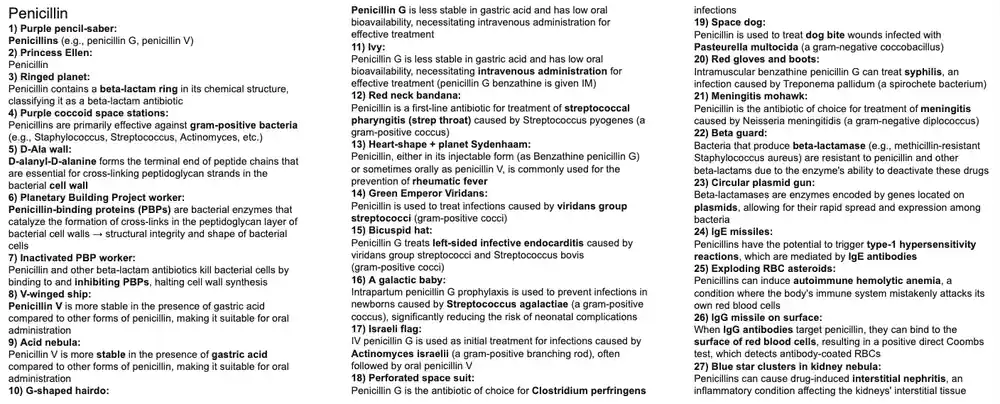
2. Nafcillin, Oxacillin, Methicillin, Dicloxacillin
- Drugs: nafcillin, oxacillin (IV), dicloxacillin (oral), methicillin (no longer used clinically).
- Mechanism: beta-lactams that bind PBPs and block peptidoglycan cross-linking; bulky side chains make them resistant to staphylococcal beta-lactamase (penicillinase).
- Indications: methicillin-sensitive Staph aureus (MSSA) - skin and soft tissue infection, abscess, endocarditis, osteomyelitis, septic arthritis; not active against MRSA.
- Adverse effects: hypersensitivity, interstitial nephritis (methicillin), hepatotoxicity/cholestasis (oxacillin, dicloxacillin), phlebitis (nafcillin); resistance in MRSA via altered PBP2a (mecA gene), treat with vancomycin, linezolid, daptomycin or ceftaroline.
- Buzzwords: penicillinase-resistant penicillins; Staph aureus is catalase and coagulase positive, ferments mannitol, protein A binds IgG Fc; TSST-1 superantigen; preformed enterotoxin food poisoning (mayonnaise, meats).
- 1Ringed planet: Anti-staphylococcal penicillins (nafcillin, oxacillin, dicloxacillin, methicillin) are beta-lactam antibiotics; they contain the beta-lactam ring.
- 2Death Coccus wall: The bacterial peptidoglycan cell wall contains repeating strands with terminal D-alanyl-D-alanine peptides that are cross-linked.
- 3Planetary Building Project worker: Penicillin-binding proteins (PBPs) form the peptidoglycan cross-links; beta-lactams inhibit them.
- 4Ineffective beta guard: Staphylococcal beta-lactamases (penicillinase) are ineffective against anti-staph penicillins, which therefore remain active against beta-lactamase-producing MSSA.
- 5Protective armor: The bulky R-groups of anti-staph penicillins sterically block beta-lactamase from binding and hydrolyzing the beta-lactam ring.⭐ This is why they are called penicillinase-resistant penicillins.
- 6Pencil saber staff: Nafcillin, an anti-staph penicillin given IV (hepatically cleared, no renal adjustment).⭐ Can cause phlebitis and neutropenia with prolonged use.
- 7Ox horns: Oxacillin, an anti-staph penicillin given IV.
- 8Purple coccoid space station cluster: Anti-staph penicillins are active against gram-positive staphylococci, particularly methicillin-sensitive Staph aureus (MSSA).
- 9Red hump: Anti-staph penicillins (nafcillin, oxacillin; dicloxacillin orally) are used for skin and soft tissue infections (folliculitis, abscesses, cellulitis) due to MSSA.
- 10Tricuspid pyramids: Anti-staph penicillins treat MSSA endocarditis (tricuspid valve in IV drug users).⭐ Cefazolin is an alternative.
- 11Fish bones: Anti-staph penicillins treat MSSA osteomyelitis.
- 12Altered wall builder: MRSA produces an altered PBP (PBP2a, encoded by mecA) with low affinity for beta-lactams, conferring resistance to anti-staph penicillins and other beta-lactams (except ceftaroline).
- 13Merciless Dark Lord MRSA: Methicillin-resistant Staph aureus (MRSA); treat with vancomycin, linezolid, daptomycin, or ceftaroline.
Show the original legend picture
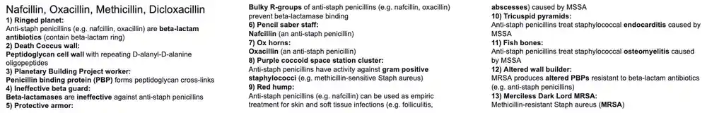
3. Ampicillin, Amoxicillin, Piperacillin, Ticarcillin
- Drugs: aminopenicillins - ampicillin (IV/PO), amoxicillin (PO); extended-spectrum (antipseudomonal) - piperacillin, ticarcillin; beta-lactamase inhibitors - clavulanate, sulbactam, tazobactam.
- Mechanism: beta-lactams that bind PBPs and block peptidoglycan cross-linking; added gram-negative activity via better porin penetration; susceptible to beta-lactamase unless combined with an inhibitor.
- Indications: respiratory (otitis media, sinusitis, pneumonia), UTI, Listeria meningitis, Enterococcus, H. pylori (amoxicillin), endocarditis prophylaxis, Pseudomonas and anaerobes (piperacillin-tazobactam).
- Adverse effects: hypersensitivity, rash (especially with EBV mononucleosis), SJS/TEN, hepatotoxicity (amoxicillin-clavulanate cholestasis), diarrhea, interstitial nephritis, hemolytic anemia.
- Buzzwords: ampicillin covers HELPSS (H. influenzae, E. coli, Listeria, Proteus, Salmonella, Shigella, Enterococci); amoxicillin for strep prophylaxis and H. pylori; ampicillin-sulbactam for anaerobes; pip-tazo for Pseudomonas and anaerobes.
- 1Amino's Space Cantina: Amoxicillin and ampicillin are aminopenicillins (penicillins with an added amino group, improving gram-negative penetration).
- 2Ringed planet: Aminopenicillins and extended-spectrum penicillins are beta-lactam antibiotics; they contain the beta-lactam ring.
- 3Unfinished Death Coccus: Aminopenicillins and extended-spectrum penicillins bind penicillin-binding proteins (PBPs), halting peptidoglycan cell wall synthesis; they are bactericidal.
- 4Purple coccoid space stations: Aminopenicillins and extended-spectrum penicillins retain activity against gram-positive organisms (Streptococcus, Enterococcus, non-penicillinase-producing Staph).
- 5Red color: Aminopenicillins and extended-spectrum penicillins have improved activity against gram-negative bacteria compared with natural penicillins.
- 6Prism: Aminopenicillins and extended-spectrum penicillins are broad-spectrum antibiotics (gram-positive, gram-negative, and some anaerobes).
- 7Ammo box: Amoxicillin, an aminopenicillin.
- 8Open mouth: Amoxicillin has good oral bioavailability (better than ampicillin) and can be given with food.
- 9Red bandana: Amoxicillin and ampicillin can treat streptococcal pharyngitis (strep throat) caused by Streptococcus pyogenes, although penicillin is first-line.
- 10Plugged ears: Amoxicillin is first-line for acute otitis media and sinusitis (S. pneumoniae, H. influenzae, M. catarrhalis).⭐ Use amoxicillin-clavulanate if beta-lactamase-producing H. influenzae or M. catarrhalis is suspected.
- 11Rusty chest plate: Aminopenicillins treat community-acquired pneumonia caused by S. pneumoniae and H. influenzae.
- 12H wing ship: Aminopenicillins have activity against Haemophilus influenzae (non-beta-lactamase-producing strains).
- 13Helicopter: Amoxicillin is part of triple therapy (with clarithromycin and a PPI) for Helicobacter pylori infection.
- 14Robin of Ixodes: Amoxicillin treats Lyme disease (Borrelia burgdorferi) in children and pregnant women, where doxycycline is avoided.⭐ Doxycycline is first-line in non-pregnant adults.
- 15Amp: Ampicillin, an aminopenicillin given IV or orally.
- 16Ivy: Ampicillin can be administered IV (useful for serious infections).
- 17Gas mask: Ampicillin-sulbactam treats anaerobic infections such as aspiration pneumonia.
- 18Diplococcus rock drums: Ampicillin is a drug of choice for Enterococcus (E. faecalis) infections.
- 19Knocked over amp: Beta-lactamase-producing strains of Enterococcus (and E. faecium) are resistant to ampicillin; use vancomycin or linezolid for resistant strains.
- 20Set LIST: Ampicillin treats meningitis caused by Listeria monocytogenes (give in neonates, elderly and immunocompromised, in addition to ceftriaxone and vancomycin).
- 21Intestinal tubes: Aminopenicillins have activity against GI and urinary tract gram-negative rods (E. coli, Proteus mirabilis, Salmonella, Shigella).
- 22Beta bouncer: Beta-lactamase-producing bacteria are resistant to aminopenicillins and extended-spectrum penicillins unless a beta-lactamase inhibitor is added.
- 23Distracting clarinet: Clavulanate is a beta-lactamase inhibitor combined with amoxicillin (Augmentin) and previously with ticarcillin.⭐ Amoxicillin-clavulanate can cause cholestatic hepatitis.
- 24Back to back tambourines: Sulbactam and tazobactam are beta-lactamase inhibitors combined with ampicillin and piperacillin respectively.
- 25Spleen hole: Amoxicillin is used as prophylaxis against encapsulated bacteria (S. pneumoniae, H. influenzae) in asplenic patients (children).
- 26Bloody tooth: Amoxicillin is used as prophylaxis before dental procedures in patients at high risk for infective endocarditis (prosthetic valve, prior endocarditis, certain congenital heart disease).
- 27Trampled liver spot: Aminopenicillins can cause drug-induced liver injury (especially cholestatic injury with amoxicillin-clavulanate).
- 28Red mask sloughing off: Aminopenicillins can cause Stevens-Johnson syndrome/toxic epidermal necrolysis (SJS/TEN).
- 29Red spots at Ebstein's Bar: Aminopenicillins can cause a diffuse maculopapular rash in patients with a viral illness, classically Epstein-Barr virus infectious mononucleosis; it is not a true IgE-mediated allergy.⭐ Rash in mono after ampicillin or amoxicillin is a classic board scenario.
- 30Piper: Piperacillin, an extended-spectrum (antipseudomonal) penicillin; given IV, usually with tazobactam.
- 31Tiger stripes: Ticarcillin, an extended-spectrum (antipseudomonal) penicillin, previously combined with clavulanate (no longer widely available).
- 32Gas mask: Extended-spectrum penicillins (piperacillin-tazobactam) treat anaerobic infections (e.g. intra-abdominal infection).
- 33Mona Lisa: Extended-spectrum penicillins (piperacillin, ticarcillin) treat Pseudomonas aeruginosa infections.⭐ Often combined with an aminoglycoside for synergy in serious Pseudomonas infections.
Show the original legend picture
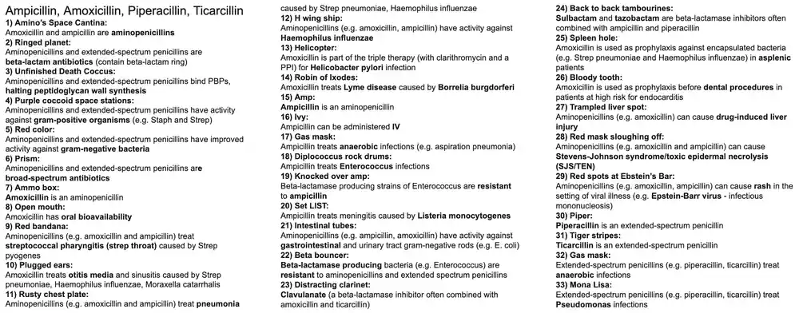
4. Cephalosporins
- Drugs: 1st gen cefazolin, cephalexin; 2nd gen cefuroxime, cefoxitin, cefotetan; 3rd gen ceftriaxone, cefotaxime, ceftazidime; 4th gen cefepime; 5th gen ceftaroline.
- Mechanism: beta-lactams that bind PBPs and block peptidoglycan cross-linking (bactericidal); more beta-lactamase-resistant than penicillins; MRSA PBP2a is bound only by ceftaroline.
- Indications: 1st gen - gram-positive cocci, skin infection, surgical prophylaxis, PEcK gram-negatives; 2nd gen - HENS plus anaerobes (cefoxitin/cefotetan); 3rd gen - meningitis, gonorrhea, Lyme, Pseudomonas (ceftazidime); 4th gen - Pseudomonas; 5th gen - MRSA.
- Adverse effects: hypersensitivity (low cross-reactivity with penicillin), disulfiram-like reaction and vitamin K deficiency (cefotetan), biliary sludge and neonatal kernicterus (ceftriaxone), increased nephrotoxicity with aminoglycosides.
- Buzzwords: no coverage of LAME (Listeria, Atypicals, MRSA, Enterococci); ceftriaxone is the single-dose IM treatment for gonorrhea; ceftriaxone should not be mixed with calcium-containing IV solutions in neonates.
- 1Ringed planet: Cephalosporins are beta-lactam antibiotics; they contain a beta-lactam ring (fused to a dihydrothiazine ring).
- 2Unfinished Death Coccus: Cephalosporins bind penicillin-binding proteins (PBPs), halting peptidoglycan cell wall synthesis; they are bactericidal.
- 31st General Lex: First-generation cephalosporins include cephalexin and cefazolin.
- 4Flex: Cephalexin, an oral first-generation cephalosporin.
- 5Fez: Cefazolin, an IV first-generation cephalosporin.
- 6Purple coccoid space stations: First-generation cephalosporins (cephalexin, cefazolin) are active against gram-positive organisms (MSSA and Streptococcus).⭐ They do not cover MRSA or Enterococcus.
- 7Puffy red gloves and patches: First-generation cephalosporins treat skin and soft tissue infections (cellulitis, abscesses) caused by Staph aureus (MSSA) and Streptococcus.
- 8Red bandana: First-generation cephalosporins treat streptococcal pharyngitis (strep throat) caused by Strep pyogenes (penicillin-allergic patients without anaphylaxis).
- 9Red bladder cup: First-generation cephalosporins treat UTIs caused by gram-negative bacteria (Proteus mirabilis, E. coli, Klebsiella pneumoniae; the "PEcK" organisms).
- 10Surgical instruments: Cefazolin is the standard agent for surgical prophylaxis (skin flora coverage).⭐ Does not cross the BBB.
- 112nd General Fox: Second-generation cephalosporins include cefuroxime, cefotetan and cefoxitin.
- 12Furious: Cefuroxime, a second-generation cephalosporin (oral and IV) used for sinusitis, otitis media, and community-acquired pneumonia; crosses the BBB poorly.
- 13Tea cup: Cefotetan, a second-generation cephalosporin with anaerobic (Bacteroides fragilis) coverage.⭐ Can cause a disulfiram-like reaction with alcohol and vitamin K deficiency bleeding.
- 14Fox: Cefoxitin, a second-generation cephalosporin with anaerobic coverage (B. fragilis), used for intra-abdominal and pelvic infections.
- 15Some red space stations: Second-generation cephalosporins have extended gram-negative coverage compared with first generation, with somewhat less gram-positive activity.
- 16Red hens: Second-generation cephalosporins are active against HENS organisms: Haemophilus influenzae, Enterobacter, Neisseria, Serratia (in addition to PEcK).
- 173rd General Taz: Ceftazidime is a third-generation cephalosporin with antipseudomonal activity.
- 18Mostly red space stations: Third-generation cephalosporins (ceftriaxone, cefotaxime, ceftazidime) have extended gram-negative coverage beyond second generation, with reduced gram-positive activity.⭐ Ceftazidime has poor gram-positive coverage.
- 193 axes: Ceftriaxone and cefotaxime are third-generation cephalosporins that cross the BBB.⭐ Ceftriaxone is excreted in bile (biliary sludge) and can cause kernicterus in neonates; cefotaxime is preferred in neonates.
- 20Mohawk helmet: Ceftriaxone and cefotaxime are first-line empiric therapy for bacterial meningitis (with vancomycin, plus ampicillin in neonates, elderly and immunocompromised).
- 21H-wing ship: Third-generation cephalosporins (ceftriaxone, cefotaxime) are active against Haemophilus influenzae.
- 22Rusty chest plate: Third-generation cephalosporins treat community- and hospital-acquired pneumonia.
- 23Taz pointing to Mona Lisa: Ceftazidime is used to treat Pseudomonas aeruginosa infections (the only third-generation agent with significant antipseudomonal activity).
- 24Mona Lisa: Ceftazidime (3rd gen) and cefepime (4th gen) treat Pseudomonas infections.
- 25Dark green Emperor Viridans: Ceftriaxone treats endocarditis caused by viridans streptococci and HACEK organisms.
- 26Intestinal protection: Third-generation cephalosporins (e.g. ceftriaxone) are active against gram-negative GI pathogens (Salmonella, Shigella) and are used in severe or invasive enteric infections.
- 27Dripping uterus chandelier: A single IM dose of ceftriaxone is first-line treatment for gonorrhea (Neisseria gonorrhoeae) (add doxycycline if chlamydia is not excluded).⭐ Ceftriaxone is also used for PID and spontaneous bacterial peritonitis.
- 28Robin of Ixodes: Ceftriaxone treats Lyme disease caused by Borrelia burgdorferi, especially disseminated disease (neuroborreliosis, carditis).
- 294th General Prime: Cefepime, a fourth-generation cephalosporin.
- 30Prism: Fourth-generation cephalosporins (cefepime) are broad-spectrum antibiotics.
- 31Red and purple space stations: Fourth-generation cephalosporins (cefepime) cover both gram-negative organisms (including Pseudomonas) and gram-positive organisms, and are resistant to many beta-lactamases.
- 32Mohawk helmet: Cefepime treats bacterial meningitis (it crosses the BBB; also used in healthcare-associated meningitis).⭐ Can cause neurotoxicity (encephalopathy, seizures) in renal failure.
- 335th General Tara: Ceftaroline, a fifth-generation cephalosporin.
- 34Prism: Fifth-generation cephalosporins (ceftaroline) are broad-spectrum antibiotics.
- 35Merciless Dark Lord MRSA: Ceftaroline treats methicillin-resistant Staph aureus (MRSA) because it binds PBP2a; it also covers some gram-negatives and Strep pneumoniae but not Pseudomonas.⭐ It is the only cephalosporin active against MRSA.
- 36Ineffective beta guards: Beta-lactamases are largely ineffective against cephalosporins (more resistant than penicillins), although extended-spectrum beta-lactamases (ESBLs) can hydrolyze them.
Show the original legend picture
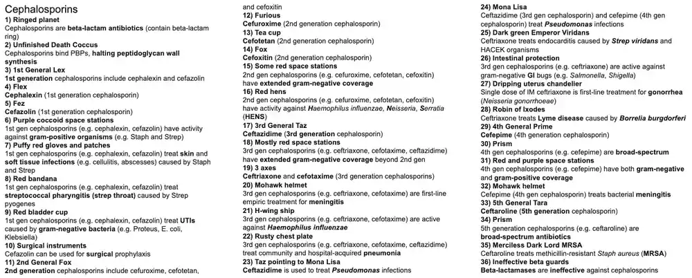
5. Monobactams & Carbapenems
- Drugs: monobactam - aztreonam; carbapenems - imipenem (with cilastatin), meropenem, ertapenem, doripenem.
- Mechanism: beta-lactams that bind PBPs and block peptidoglycan cross-linking; aztreonam binds PBP3 (monocyclic ring) and is resistant to many beta-lactamases; carbapenems are very resistant to beta-lactamases including ESBLs.
- Indications: aztreonam - aerobic gram-negative rods (including Pseudomonas) in penicillin-allergic patients; carbapenems - broad-spectrum gram-positive, gram-negative and anaerobic coverage for serious infections, ESBL organisms, meningitis (meropenem), and resistant organisms.
- Adverse effects: aztreonam - GI upset, rash, usually safe in penicillin allergy; carbapenems - GI upset, rash, seizures (imipenem highest risk), eosinophilia; imipenem needs cilastatin because renal dehydropeptidase inactivates it.
- Buzzwords: aztreonam has no gram-positive or anaerobic activity; ertapenem lacks Pseudomonas coverage; carbapenems lack MRSA and atypical coverage; carbapenemase-producing (CRE/KPC) bacteria are resistant.
- 1Ringed planet: Monobactams (aztreonam) and carbapenems are beta-lactam antibiotics; monobactams have a monocyclic beta-lactam ring while carbapenems have a fused ring.
- 2Unfinished Death Coccus: Monobactams and carbapenems bind penicillin-binding proteins (PBPs), halting peptidoglycan cell wall synthesis (bactericidal).
- 3One eyed AZ-3M: Aztreonam, the only available monobactam; it binds PBP3 and is given IV (or inhaled for cystic fibrosis).
- 4Bellows: Monobactams (aztreonam) are active against aerobic gram-negative rods only (no gram-positive or anaerobic activity).⭐ Think "aerobic gram-negative rods in a penicillin-allergic patient".
- 5Red rod robot: Aztreonam has activity against aerobic gram-negative rods such as Enterobacterales (E. coli, Klebsiella) and Pseudomonas aeruginosa.
- 6Mona Lisa: Monobactams (aztreonam) and carbapenems (except ertapenem) treat Pseudomonas infections.⭐ Ertapenem lacks Pseudomonas and Acinetobacter activity.
- 7Red mohawk helmet and rusty lungs: Aztreonam treats serious systemic gram-negative infections (pneumonia, sepsis, UTI, intra-abdominal infection, and meningitis).
- 8Pencil wound: Aztreonam can be used in patients with a history of penicillin allergy because it does not cross-react with penicillins (sharing a side chain only with ceftazidime).⭐ Safe in penicillin allergy; no cross-reactivity because of the monocyclic structure.
- 9Ineffective beta guard: Many beta-lactamases are ineffective against aztreonam and carbapenems (but ESBLs hydrolyze aztreonam).
- 10Hover car: Carbapenems include imipenem, meropenem, ertapenem and doripenem.
- 11Prism: Carbapenems (imipenem, meropenem) have a very broad spectrum covering gram-positive, gram-negative (including Pseudomonas) and anaerobic bacteria.
- 12Gas mask: Carbapenems treat anaerobic infections (e.g. aspiration pneumonia, intra-abdominal infections).
- 13"When others fail": Carbapenems are reserved for infections resistant to other antibiotics (ESBL-producing organisms, multidrug-resistant bacteria) and life-threatening infections.⭐ They do not cover MRSA, atypicals, or Enterococcus faecium.
- 14Mohawk helmet: Meropenem treats bacterial meningitis (imipenem is avoided because of seizure risk).⭐ Used empirically in healthcare-associated meningitis.
- 15Amy: Imipenem, a carbapenem that is always co-administered with cilastatin.
- 16Cilastin oil: Cilastatin inhibits renal dehydropeptidase I in the proximal tubule, preventing degradation of imipenem, prolonging its half-life and reducing nephrotoxicity.
- 17Mud puddle: Carbapenems commonly cause GI side effects (nausea, vomiting, diarrhea).
- 18Rust spots: Carbapenems can cause skin rash (and hypersensitivity; low cross-reactivity with penicillins).
- 19Shaking: Imipenem lowers the seizure threshold, especially at high doses or in renal impairment, and in patients with CNS disease.⭐ Meropenem has lower seizure risk but is reduced by valproate (carbapenems lower valproate levels).
- 20Ineffective rainbow beta guard: Extended-spectrum beta-lactamases (ESBLs) do not hydrolyze carbapenems, making them drugs of choice for ESBL infections; resistance arises with carbapenemases (KPC) or porin loss.
Show the original legend picture
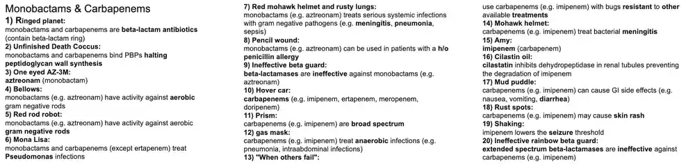
6. Vancomycin
- Drug: vancomycin, a glycopeptide antibiotic given IV for systemic infection (not absorbed orally; oral form acts in the gut lumen for C. difficile).
- Mechanism: binds the D-Ala-D-Ala terminus of peptidoglycan precursors, blocking transglycosylation and transpeptidation (cell wall synthesis); bactericidal; not affected by altered PBPs or beta-lactamases.
- Indications: MRSA, Staph epidermidis, penicillin-resistant S. pneumoniae, Enterococcus (ampicillin-resistant), empiric therapy for meningitis, endocarditis and osteomyelitis; oral for C. difficile colitis.
- Adverse effects: vancomycin flushing syndrome (formerly red man syndrome, histamine release), nephrotoxicity, ototoxicity, thrombophlebitis, DRESS/eosinophilia, neutropenia; therapeutic drug monitoring (trough or AUC).
- Buzzwords: no activity against gram-negative bacteria (cannot cross outer membrane); VRE has D-Ala-D-Lac; infuse slowly and pretreat with antihistamine to prevent flushing.
- 1Purple coccoid temples: Vancomycin has activity against gram-positive bacteria (Staph, Strep, Enterococcus); not gram-negatives.
- 2Merciless pharaoh: Methicillin-resistant Staph aureus (MRSA).
- 3"No mercy": Vancomycin treats MRSA infections (first-line for serious MRSA).
- 4Golden staff: Staphylococcus aureus.
- 5Van: Vancomycin, a glycopeptide antibiotic.
- 6Temple wall hieroglyphs: Vancomycin binds D-Ala-D-Ala and directly inhibits cell wall synthesis.
- 7Altered wall builder: MRSA produces altered PBPs that are resistant to beta-lactams.
- 8Ineffective altered wall builder: MRSA's altered PBPs are ineffective against vancomycin, since it does not rely on PBP binding.
- 9Ineffective beta guard: Beta-lactamases are ineffective against vancomycin.
- 10Ivy: Vancomycin is given IV for systemic infection.
- 11Meningitis mohawk: Vancomycin plus cefepime, ceftazidime or meropenem is empiric therapy for healthcare-associated meningitis, and vancomycin is added to ceftriaxone for suspected penicillin-resistant Strep pneumoniae (PRSP).
- 12Fish bones: Vancomycin treats MRSA osteomyelitis.
- 13Coughing nurse: Vancomycin treats nosocomial MRSA infections such as hospital-acquired pneumonia.
- 14Biofilm on lines and valves: Vancomycin treats Staph epidermidis infections (e.g. prosthetic valve endocarditis, catheter infections).
- 15Heart shaped headpiece: Vancomycin is empiric treatment for infective endocarditis (covering MRSA and viridans/enterococci in penicillin-allergic patients).
- 16Diplococcus rock drums: Vancomycin treats Enterococcus infections (when ampicillin cannot be used).
- 17D-LAC hieroglyph: D-Ala-D-Lac substitution confers vancomycin resistance (VRE).
- 18Temple of flowing chocolate: Oral vancomycin treats C. difficile infection (pseudomembranous colitis).
- 19Red statue: Vancomycin can cause vancomycin flushing syndrome (red man syndrome).
- 20Beehive: Mast cell activation with histamine release underlies vancomycin flushing syndrome.⭐ Slow the infusion; this is not IgE-mediated.
- 21Blue venous vines: Vancomycin infusion can cause thrombophlebitis.
- 22Ototoxic gong: Vancomycin can cause ototoxicity.
- 23Falling kidney: Vancomycin can cause nephrotoxicity.
- 24Eo-slingshot granules: Vancomycin can cause eosinophilia.
- 25Eosinophilic dress: Vancomycin can cause DRESS syndrome (rash, fever, eosinophilia, organ involvement).
- 26Undulating sand dunes: Vancomycin requires monitoring of plasma drug levels (trough or AUC-guided dosing) to ensure efficacy and limit nephrotoxicity.
Show the original legend picture
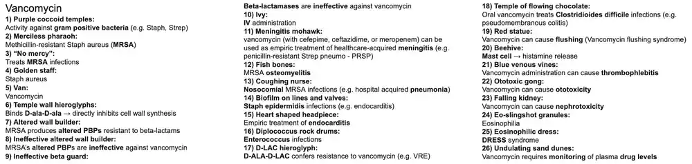
7. Linezolid
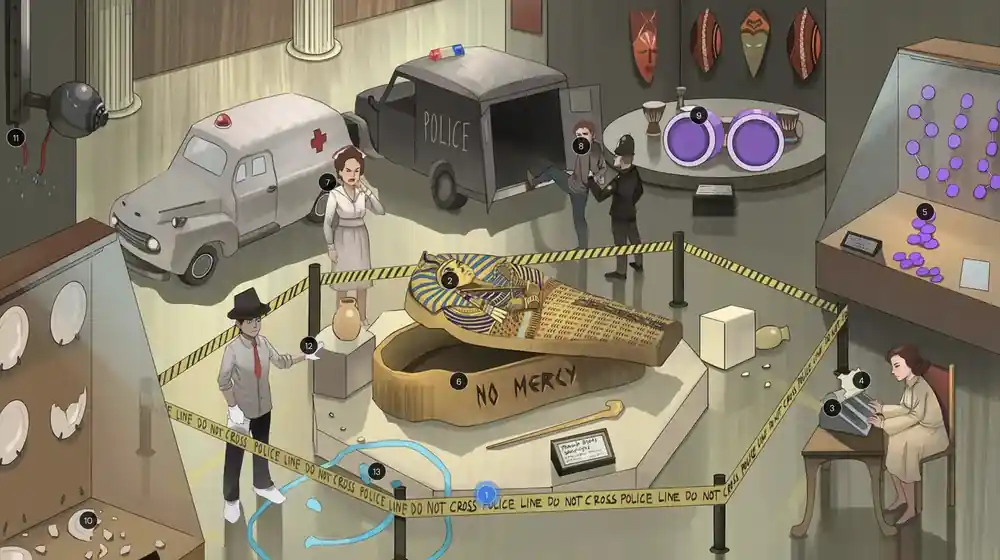
- Drug: linezolid (oxazolidinone; tedizolid is a related agent).
- Mechanism: binds the 23S rRNA of the 50S subunit and prevents formation of the 70S initiation complex -> bacteriostatic (bactericidal for streptococci).
- Uses: MRSA (including nosocomial pneumonia and skin infections), VRE, other resistant gram-positives; good oral bioavailability.
- Adverse effects: myelosuppression (thrombocytopenia), optic and peripheral neuropathy with prolonged use, serotonin syndrome (weak MAO inhibitor), lactic acidosis.
- Buzzwords: initiation complex; 'MRSA and VRE'; avoid with SSRIs and tyramine-rich foods.
- 1Police line: Represents linezolid (oxazolidinone).
- 2Merciless pharaoh: Represents methicillin-resistant Staphylococcus aureus (MRSA).
- 3Ribosomal typewriter: Binds the 50S subunit (23S rRNA) and prevents formation of the initiation complex, inhibiting protein synthesis.
- 4Paper jam: Linezolid is bacteriostatic (bactericidal against streptococci).
- 5Purple jewels in clusters and chains: Active against gram-positive cocci (Staphylococcus in clusters, Streptococcus and Enterococcus in chains).
- 6'No mercy': Treats MRSA infections (skin and soft tissue, pneumonia).
- 7Coughing nurse: Treats nosocomial MRSA infections such as hospital-acquired and ventilator-associated pneumonia.⭐ Linezolid achieves good lung penetration, unlike daptomycin.
- 8Resisting van: Active against vancomycin-resistant strains.
- 9Diplococcus rock drums: Active against vancomycin-resistant Enterococcus (VRE).
- 10Broken plates: Causes thrombocytopenia (bone marrow suppression), typically with prolonged courses over 2 weeks; monitor CBC.
- 11Cut security camera wire: Prolonged use can cause optic neuropathy (vision loss).
- 12Gloves and shoe-covers: Prolonged use can cause peripheral neuropathy in a stocking-glove distribution.
- 13Happy face: Causes serotonin syndrome when combined with serotonergic drugs (SSRIs, MAOIs) because linezolid is a weak nonselective MAO inhibitor.⭐ Also avoid large amounts of tyramine-rich foods.
Show the original legend picture
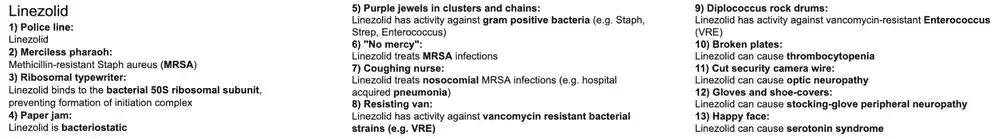
8. Clindamycin
- Drug: clindamycin (lincosamide), oral, IV or topical.
- Mechanism: binds the 50S ribosomal subunit and blocks translocation -> bacteriostatic; erm-mediated resistance can be inducible (D-test).
- Uses: anaerobes above the diaphragm (aspiration pneumonia, lung abscess, oral infections), MRSA and group A strep skin/soft tissue, C. perfringens, acne, bacterial vaginosis, polymicrobial pelvic infections (with gentamicin).
- Adverse effects: Clostridioides difficile pseudomembranous colitis, diarrhea; no activity against aerobic gram-negatives or enterococci.
- Buzzwords: 'Clindamycin: C. diff colitis'; 'Treats anaerobes above the diaphragm'; inhibits toxin production in strep and clostridial toxic infections.
- 1Keep clean: Represents clindamycin (lincosamide).
- 2Merciless pharaoh: Represents methicillin-resistant Staphylococcus aureus (MRSA).
- 3Ribosomal typewriter: Clindamycin binds the 50S ribosomal subunit and blocks translocation, inhibiting protein synthesis.
- 4Paper jam: Clindamycin is bacteriostatic.
- 5Purple coccoid dumbbells: Active against gram-positive cocci (Staphylococcus, Streptococcus).
- 6Pie and red puffy glove: Treats Streptococcus pyogenes (group A strep) skin and soft tissue infections such as cellulitis and necrotizing infection; also suppresses toxin production.⭐ Added to penicillin for necrotizing fasciitis/toxic shock to inhibit toxin synthesis.
- 7'No mercy': Treats MRSA infections (community-acquired skin and soft tissue), if susceptible; check D-test for inducible resistance.
- 8Gas mask: Treats anaerobic infections, classically anaerobes above the diaphragm (e.g., Bacteroides, Fusobacterium, Peptostreptococcus).⭐ Metronidazole is preferred for anaerobes below the diaphragm.
- 9Lung stains with holes: Treats lung abscesses (anaerobic).
- 10Choking on Bacteraid: Treats oral infections and aspiration pneumonia caused by mouth anaerobes (B. fragilis resistance is increasing).
- 11Perforated pants: Treats Clostridium perfringens infections (gas gangrene), usually with penicillin; clindamycin reduces toxin production.
- 12Snow-capped mountains: Topical clindamycin treats moderate to severe inflammatory acne vulgaris.
- 13Uterus machine: Clindamycin plus gentamicin treats polymicrobial female genital tract infections (endometritis, chorioamnionitis, PID).
- 14Judo practitioner with sai: Gentamicin (aminoglycoside) is paired with clindamycin to cover aerobic gram-negatives that clindamycin does not.
- 15Venus fly trap garden: Treats bacterial vaginosis (Gardnerella vaginalis, anaerobes); metronidazole is first line, clindamycin an alternative.
- 16Brown puddle: Can cause diarrhea.
- 17Brown geyser: Associated with pseudomembranous colitis from Clostridioides difficile overgrowth.⭐ Clindamycin has among the highest C. difficile risk, together with fluoroquinolones and cephalosporins.
Show the original legend picture
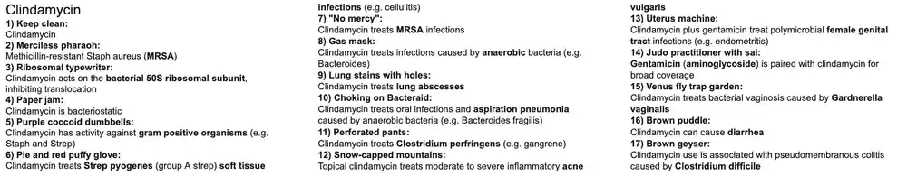
9. Aminoglycosides
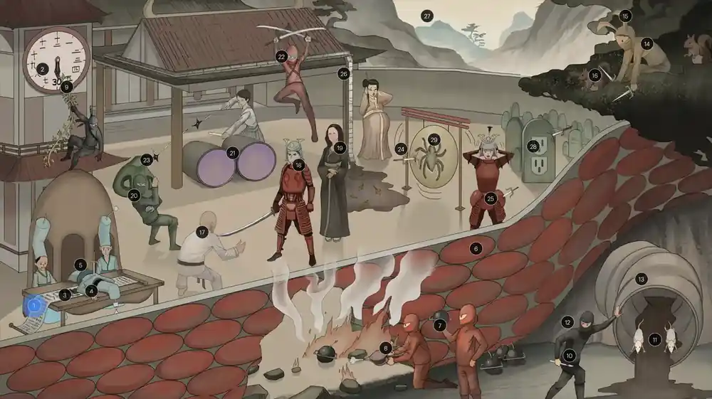
- Drugs: gentamicin, tobramycin, amikacin, streptomycin, neomycin, paromomycin.
- Mechanism: irreversibly bind the 30S subunit -> block initiation complex and cause mRNA misreading -> bactericidal; need O2-dependent uptake (no anaerobe activity).
- Uses: serious aerobic gram-negative infections incl. Pseudomonas (synergy with beta-lactams), enterococcal/staph synergy, streptomycin for TB/plague/tularemia, neomycin bowel prep and hepatic encephalopathy, paromomycin for intestinal parasites.
- Adverse effects: nephrotoxicity (ATN), ototoxicity (cochlear and vestibular), neuromuscular blockade, teratogenicity (fetal deafness); contraindicated in myasthenia gravis.
- Buzzwords: 'Nephrotoxicity, Neuromuscular blockade, Ototoxicity, Teratogen'; peak/trough monitoring; ineffective against anaerobes; given IV/IM (poor oral absorption).
- 1Ribosomal kanji translators: Aminoglycosides act on the bacterial ribosome and halt protein synthesis.
- 230 min: Bind irreversibly to the 30S ribosomal subunit and block formation of the initiation complex.⭐ Aminoglycosides: irreversible 30S; tetracyclines: reversible 30S.
- 3Smeared kanji: Cause misreading of mRNA, producing faulty proteins.
- 4Dead translator: Aminoglycosides are bactericidal (concentration-dependent killing with a post-antibiotic effect).
- 5Sai: Represents the class: streptomycin, neomycin, paromomycin, gentamicin, tobramycin, amikacin.
- 6Red bacilli bricks: Active against aerobic gram-negative bacilli.
- 7Beta-lactam bomb: Often combined with cell wall active drugs (beta-lactams, vancomycin), which increase aminoglycoside penetration (synergy).
- 8Bellows: Uptake requires oxygen-dependent transport, so they are ineffective against anaerobes and in acidic or anoxic abscesses.⭐ Resistant: anaerobes.
- 9Ivy: Administered IV (or IM) because they are poorly absorbed orally, being highly polar.
- 10Scalpel shuriken: Neomycin (oral) is used for bowel prep before colorectal surgery to reduce gut flora.
- 11Pair of mice in tunnel: Paromomycin is a luminal agent against intestinal parasites (Entamoeba histolytica, Giardia, Cryptosporidium).
- 12Ninjutsu master: Represents neomycin.
- 13Secret colon tunnel: Neomycin and paromomycin are not absorbed orally and stay active in the GI tract; neomycin also reduces ammonia-producing bacteria in hepatic encephalopathy.
- 14Sai master: Represents streptomycin.
- 15Rabbit ears: Streptomycin treats tularemia (Francisella tularensis).
- 16Squirrels with fleas: Streptomycin treats plague (Yersinia pestis); also second-line for TB.
- 17Judo master: Represents gentamicin, used for resistant gram-negative infections (Enterobacter, Serratia, Klebsiella).
- 18Red shogun: Gentamicin treats systemic gram-negative infections (sepsis, nosocomial respiratory infections, complicated UTI, intra-abdominal infection).
- 19Mona Lisa: Gentamicin, tobramycin and amikacin treat Pseudomonas aeruginosa infections (usually with an antipseudomonal beta-lactam).
- 20Cobra ninja: Represents tobramycin, with spectrum similar to gentamicin and good antipseudomonal activity (used in cystic fibrosis, often inhaled).
- 21Double purple taiko drums: Gives synergistic activity against Enterococcus (and staph) when combined with a cell wall active agent such as penicillin or vancomycin.
- 22Katana master: Represents amikacin, which resists many aminoglycoside-modifying enzymes.
- 23Inactivating ninja stars: Resistance occurs via plasmid-encoded modifying enzymes (acetylation, phosphorylation, adenylation); e.g., E. faecium acetyltransferase inactivates tobramycin.
- 24Cracked gong: Ototoxicity: cochlear (hearing loss) and vestibular damage; risk is increased with loop diuretics.
- 25Sai in flank armor: Nephrotoxicity, increased with vancomycin, loop diuretics, NSAIDs and contrast.
- 26Rusted muddy drain tube: Causes acute tubular necrosis (muddy brown casts), usually reversible.
- 27Undulating peaks and troughs: Therapeutic drug monitoring of peak and trough levels is needed; toxicity correlates with elevated troughs.
- 28Damaged grave with electrical end plate: Contraindicated in myasthenia gravis: they can cause neuromuscular blockade (inhibit presynaptic ACh release) and worsen weakness.
- 29Tarantula on gong: Teratogenic: cause fetal eighth cranial nerve damage and congenital deafness; avoid in pregnancy.
Show the original legend picture
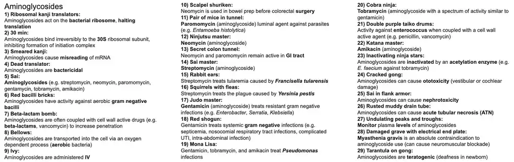
10. Trimethoprim-Sulfamethoxazole
- Drugs: trimethoprim + sulfamethoxazole (also sulfadiazine, pyrimethamine; dapsone is a related sulfone).
- Mechanism: SMX (PABA analog) inhibits dihydropteroate synthase; TMP inhibits dihydrofolate reductase -> sequential folate blockade, bactericidal combination.
- Uses: UTI, prostatitis, Shigella/Salmonella, Nocardia, PJP treatment and prophylaxis (CD4 < 200), toxoplasmosis prophylaxis (CD4 < 100), MRSA skin infections.
- Adverse effects: pancytopenia/megaloblastic anemia (leucovorin), hyperkalemia (type 4 RTA), hemolysis in G6PD deficiency, SJS, kernicterus, teratogenic, photosensitivity, interstitial nephritis, warfarin interaction.
- Buzzwords: 'TMP: Treats Marrow Poorly', sequential blockade, avoid in late pregnancy/neonates, leucovorin rescue, hyperkalemia.
- 1Panda: PABA (para-aminobenzoic acid), the bacterial precursor for folate synthesis.
- 22 leaves on first step: Dihydrofolic acid (DHF), made from PABA by dihydropteroate synthase.
- 34 leaves on second step: Tetrahydrofolic acid (THF), made from DHF by dihydrofolate reductase; needed for purine and thymidine synthesis.
- 4Rotten sulfa eggs: Represents sulfamethoxazole (SMX), a sulfonamide.
- 5Panda dropping: SMX is a PABA analog that inhibits dihydropteroate synthase.
- 6Toilet paper: Represents trimethoprim (TMP).
- 72 leaves ducking: TMP inhibits dihydrofolate reductase, blocking DHF -> THF (bacterial enzyme preferentially).
- 8Bladder cup: TMP/SMX is a first-line treatment for uncomplicated UTI (when local resistance is low).
- 9Egg down pants: TMP/SMX treats acute (and chronic) bacterial prostatitis because it penetrates prostatic tissue.
- 10Zombie guts: TMP/SMX treats gastroenteritis from gram-negative bacteria such as Shigella and Salmonella.
- 11Red porta potty: Active against gram-negative GI and urinary tract bacteria (E. coli, etc.).
- 12No mercy pharaoh: Active against MRSA (oral option for community-acquired skin infections, not first-line empiric therapy).
- 13Card dealing cowboy: Active against Nocardia; TMP/SMX is the drug of choice.
- 14Purple fence: Active against some gram-positive bacteria.
- 15Old ping pong man in PJs: Treats Pneumocystis jirovecii pneumonia (PJP); add steroids if PaO2 < 70 mmHg.
- 16Address 200: PJP prophylaxis in HIV when CD4 < 200 (or prior PJP).
- 17Address 100: Toxoplasmosis prophylaxis with TMP/SMX in HIV when CD4 < 100 and Toxoplasma IgG positive.
- 18Gandhi cat: Pyrimethamine plus sulfadiazine treats toxoplasmosis (Toxoplasma gondii), given with leucovorin.
- 19Dyed sulfur eggs: Represents sulfadiazine (sulfonamide).
- 20Pyramid witch hat: Represents pyrimethamine (DHFR inhibitor of protozoa).
- 21Empty pan: Can cause pancytopenia (bone marrow suppression via antifolate effect).
- 22Red fireworks: Can cause megaloblastic anemia from folate deficiency; leucovorin (folinic acid) can be given for rescue.
- 23Tarantula: Teratogenic in the first trimester: antifolate effects cause neural tube defects and other malformations.
- 24Sweaty itchy red devil: Sulfa allergy: fever, urticaria and rash.
- 25Bite and seeds: Heinz bodies (denatured hemoglobin) form under oxidative stress and splenic macrophages remove them, creating bite cells.
- 26Broken G6PD-free fruit: Can cause hemolytic anemia in G6PD deficiency.
- 27Red mask sloughing off: Can cause Stevens-Johnson syndrome (and TEN).
- 28Mad scientist with 4 tubes of acid: Can cause type IV renal tubular acidosis (hyporeninemic hypoaldosteronism-like; hyperkalemic RTA).
- 29K shape: Type IV RTA from trimethoprim leads to hyperkalemia (trimethoprim blocks ENaC like amiloride).⭐ Trimethoprim = amiloride-like K+ sparing effect.
- 30Kidney bag with little blue candies: Can cause acute interstitial nephritis (and sulfonamide crystalluria).
- 31Flash photo: Can cause photosensitivity.
- 32Yellow candy corn: Sulfonamides given in late pregnancy or to neonates can cause kernicterus by displacing bilirubin from albumin.
- 33Displaced photos from album: Sulfonamides displace other drugs (e.g., warfarin) from albumin; also inhibit CYP2C9.
- 34Bloody: Displaced/potentiated warfarin leads to over-anticoagulation and bleeding (increased INR).
- 35Vandalized chrome bumper: TMP/SMX inhibits cytochrome P450 (CYP2C9), causing drug interactions.
- 36Werewolf: Sulfonamides can cause drug-induced lupus.
Show the original legend picture
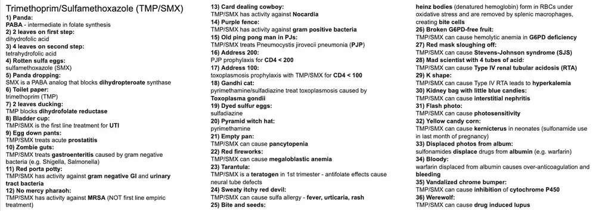
11. Macrolides
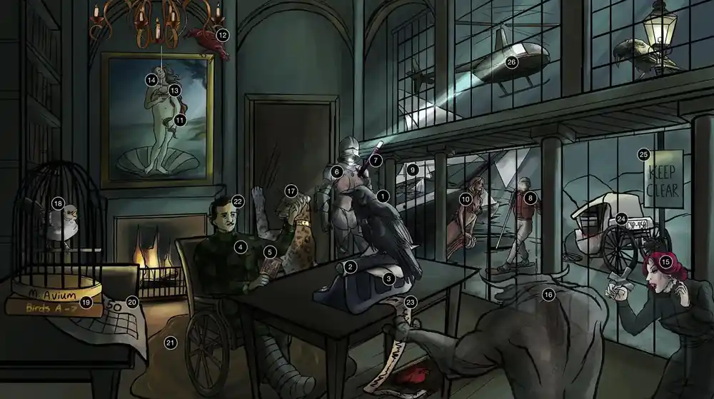
- Drugs: erythromycin, azithromycin, clarithromycin (fidaxomicin is a narrow-spectrum macrocyclic for C. difficile).
- Mechanism: bind the 23S rRNA of the 50S subunit, block translocation -> bacteriostatic; resistance via erm methylation of rRNA or efflux pumps.
- Uses: atypical/community-acquired pneumonia, pertussis, Chlamydia, Legionella, Mycoplasma, MAC prophylaxis/treatment, H. pylori (clarithromycin), diphtheria, penicillin-allergic patients.
- Adverse effects: QT prolongation, cholestatic hepatitis, GI motility (diarrhea), CYP3A4 inhibition (not azithromycin), eosinophilia, rash; infantile hypertrophic pyloric stenosis in neonates.
- Buzzwords: 'Macrolides: Motility, Arrhythmia (QT), Cholestasis, Rash, Eosinophilia' ; erythromycin = motilin agonist; azithromycin CD4 < 50.
- 1Crow: Represents macrolides (erythromycin, azithromycin, clarithromycin, fidaxomicin).
- 2Ribosomal typewriters: Bind the 50S subunit, blocking translocation and inhibiting protein synthesis.
- 3Paper jam: Macrolides are bacteriostatic.
- 4Boarded soldier: Macrolides treat Bordetella pertussis (whooping cough).
- 5Family photo: Macrolides are used as prophylaxis in close contacts of pertussis.
- 6Rusty chest plate: Azithromycin and clarithromycin treat community-acquired pneumonia (S. pneumoniae, H. influenzae, M. catarrhalis).
- 7Pencil wound: Macrolides can be used in patients with penicillin allergy.
- 8Cold walking snowshoer: Azithromycin treats atypical 'walking' pneumonia caused by Mycoplasma pneumoniae.
- 9Legion of ships: Azithromycin treats atypical pneumonia caused by Legionella pneumophila.
- 10Clam lady: Azithromycin treats atypical pneumonia caused by Chlamydia pneumoniae.
- 11Clam lady in portrait: Azithromycin treats urethritis and cervicitis caused by Chlamydia trachomatis.
- 12Red crow: Represents erythromycin.
- 13Baby: Oral erythromycin treats neonatal conjunctivitis and pneumonia caused by Chlamydia trachomatis.
- 14Dripping wax: Erythromycin eye ointment is used for prophylaxis of ophthalmia neonatorum (gonococcal and chlamydial conjunctivitis).⭐ Source text said 'treat'; erythromycin ointment is given as prophylaxis, while gonococcal infection is treated with ceftriaxone.
- 15Vampire babe: Babesiosis is treated with atovaquone plus azithromycin (alternative: clindamycin plus quinine).
- 16Bull neck: Erythromycin plus diphtheria antitoxin treats Corynebacterium diphtheriae.
- 17Bart the leopard: Azithromycin treats Bartonella henselae (cat-scratch fever).
- 18Caged mockingbird: Azithromycin and clarithromycin are active against Mycobacterium avium complex.
- 19A-Z: Represents azithromycin.
- 20...50 calendar: Azithromycin prevents MAC in HIV with CD4 < 50.
- 21Brown puddle: Macrolides increase GI motility (motilin agonism), causing diarrhea and cramping.
- 22Yellow skin: Cholestatic hepatitis: intrahepatic bile duct injury -> biliary obstruction -> jaundice.
- 23Torsades strip: Prolong the QT interval, raising risk of torsades de pointes.
- 24Broken chrome bumper: Inhibit cytochrome P450 (CYP3A4), causing drug interactions.
- 25'Keep Clear': Represents clarithromycin.
- 26Helicopter: Clarithromycin, amoxicillin and a PPI form triple therapy for Helicobacter pylori.
Show the original legend picture
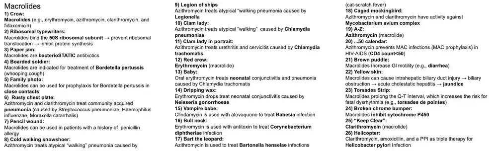
12. Tetracyclines
- Drugs: tetracycline, doxycycline, minocycline (tigecycline is a related glycylcycline); demeclocycline is used for SIADH.
- Mechanism: reversibly bind the 30S ribosomal subunit and block aminoacyl-tRNA attachment at the A site -> bacteriostatic; broad spectrum.
- Uses: Rickettsia, Ehrlichia/Anaplasma, Borrelia (Lyme), Brucella, Coxiella, Chlamydia, Mycoplasma, Yersinia, Vibrio, acne, MRSA skin infections.
- Adverse effects: teeth/bone discoloration and deformity (avoid in pregnancy and children <8 y), photosensitivity, GI upset, esophagitis, Fanconi syndrome (expired drug); chelation by divalent/trivalent cations.
- Buzzwords: 'ticks and Chlamydia', 'No dairy/antacids/iron', efflux pump resistance, doxycycline is eliminated in feces (safe in renal failure).
- 1Bicycle: Represents tetracyclines (tetracycline, doxycycline, minocycline).
- 2'No mercy': Doxycycline and minocycline treat MRSA infections (e.g., community-acquired skin and soft tissue infections).
- 3Ribosomal typewriter: Tetracyclines act on the bacterial ribosome, blocking aminoacyl-tRNA binding to the A site and inhibiting translation.
- 4Paper jam: Tetracyclines are bacteriostatic.
- 530 sec timer: Bind reversibly to the 30S ribosomal subunit.⭐ 30S = 'tetra-30': aminoglycosides (irreversible) and tetracyclines (reversible) both hit 30S.
- 6Prism: Broad-spectrum antibiotics (gram-positive, gram-negative, atypicals, spirochetes).
- 7Ticks: Doxycycline covers tick-borne pathogens: Rickettsia (Rocky Mountain spotted fever), Ehrlichia, Anaplasma, Francisella tularensis and Borrelia burgdorferi (Lyme disease).⭐ Doxycycline is the drug of choice for RMSF, including in children.
- 8Bruce the cow: Doxycycline (with rifampin or an aminoglycoside) treats Brucella infection (brucellosis).
- 9Sheep with rusty heart bell: Doxycycline treats Coxiella burnetii (Q fever), including culture-negative endocarditis.
- 10Squirrels with fleas: Tetracyclines (tetracycline, doxycycline) treat Yersinia pestis (plague).
- 11Clam seat: Doxycycline treats cervicitis and urethritis caused by Chlamydia trachomatis.
- 12Uterus bike: Doxycycline (with a cephalosporin, e.g. ceftriaxone) treats pelvic inflammatory disease to cover Chlamydia trachomatis.
- 13Clam bra: Doxycycline treats bronchitis and atypical pneumonia caused by Chlamydia pneumoniae.
- 14Cold walking snowshoer: Doxycycline treats atypical 'walking' pneumonia caused by Mycoplasma pneumoniae.
- 15White capped mountains: Tetracyclines (doxycycline, minocycline) treat acne vulgaris by reducing C. acnes and inflammation.
- 16Medals: Absorption is decreased by chelation with multivalent cations (Ca2+, Mg2+, Fe2+, Al3+) in dairy, antacids and iron supplements; take separately.⭐ Do not take with milk, antacids, or iron.
- 17Chewing discolored Ca2+ medal: Causes permanent tooth discoloration (and enamel hypoplasia) in young children by binding calcium in developing teeth.
- 18Tarantula: Teratogenic: deposits in fetal teeth and bone causing discoloration and impaired bone growth; contraindicated in pregnancy and in children <8 years.
- 19Mud puddle: Causes GI side effects: nausea, vomiting, diarrhea and pill esophagitis.
- 20Sensitive photos: Causes photosensitivity (phototoxic sunburn-like reaction); advise sun protection.
- 21Fan cone: Fanconi syndrome (proximal tubule dysfunction, type 2 RTA) is associated with ingestion of expired (degraded) tetracyclines.
- 22Bike pump: Resistance occurs mainly via efflux pumps (and ribosomal protection proteins).
- 23Sewage pipe: Doxycycline is eliminated mainly in feces (biliary), so no renal dose adjustment is needed; tetracycline itself is renally cleared.⭐ Doxycycline is the tetracycline of choice in renal failure.
Show the original legend picture
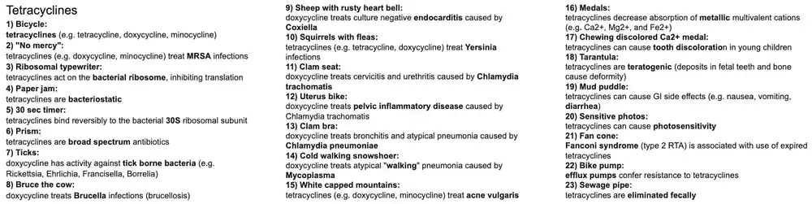
13. Chloramphenicol
- Drug: chloramphenicol (broad-spectrum, rarely used in the US).
- Mechanism: binds the 50S subunit and inhibits peptidyltransferase (peptide bond formation) -> bacteriostatic.
- Uses: meningitis (S. pneumoniae, H. influenzae, N. meningitidis) in resource-limited settings, alternative for Rickettsia (RMSF) in pregnancy or doxycycline allergy, anaerobes.
- Adverse effects: dose-dependent reversible anemia, idiosyncratic aplastic anemia, gray baby syndrome (neonates lack glucuronyl transferase); CYP inhibitor.
- Buzzwords: 'Gray baby', 'aplastic anemia', peptidyltransferase, developing countries.
- 1Ribosomal typewriter: Binds the 50S subunit and inhibits peptidyltransferase, blocking peptide bond formation and translation.
- 2Meningitis space helmet: Used as empiric treatment of bacterial meningitis (S. pneumoniae, H. influenzae, N. meningitidis) in developing countries because it penetrates the CNS well and is cheap.
- 3Earth ball: Chloramphenicol is used mainly in developing countries because of its toxicity.
- 4Spotted hand and foot rock climber: Alternative in serious rickettsial infections such as Rocky Mountain spotted fever (Rickettsia rickettsii, tick-borne), e.g. when doxycycline cannot be used.
- 5Deflated inner tubes: Causes dose-related reversible anemia from bone marrow suppression of RBC production.
- 6Plastic bone: Rarely causes idiosyncratic, dose-independent aplastic anemia (pancytopenia) that can be irreversible and fatal.⭐ Aplastic anemia is not dose-related.
- 7Grey baby: In newborns, deficient hepatic glucuronidation lets the drug accumulate, causing gray baby syndrome (vomiting, hypotonia, hypothermia, ashen color, cardiovascular collapse).⭐ Avoid in neonates and late pregnancy.
- 8Paper jam: Chloramphenicol is bacteriostatic (though bactericidal against some meningitis pathogens).
Show the original legend picture
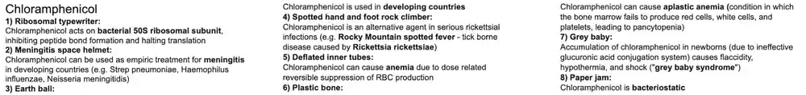
14. Fluoroquinolones
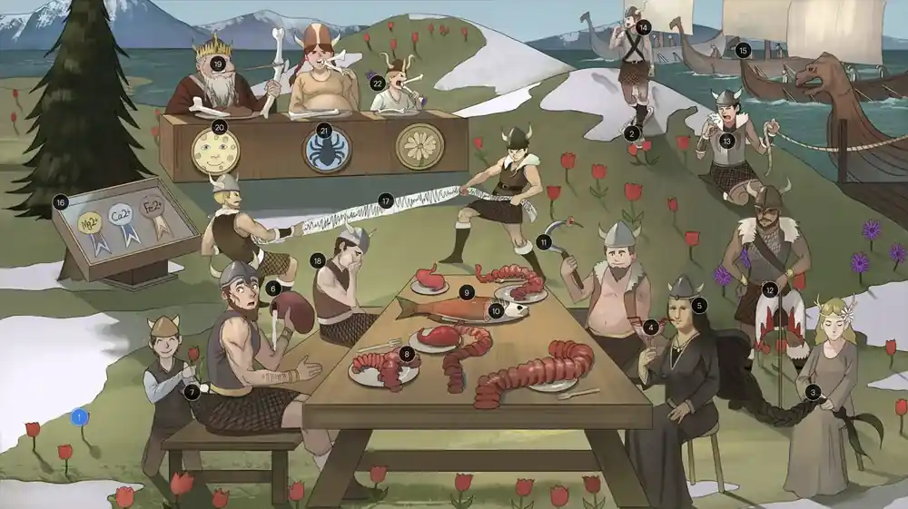
- Drugs: ciprofloxacin, levofloxacin, moxifloxacin, gemifloxacin, ofloxacin (-floxacin).
- Mechanism: inhibit bacterial DNA gyrase (topoisomerase II) and topoisomerase IV -> bactericidal; resistance via gyrase mutations and efflux.
- Uses: gram-negative UTI/pyelonephritis, prostatitis, GI infections, Pseudomonas (cipro, levo), anthrax, osteomyelitis, respiratory quinolones for CAP and atypicals.
- Adverse effects: tendon rupture/tendinitis (risk with steroids, elderly), QT prolongation, cartilage damage in children, CNS effects, C. difficile; contraindicated in pregnancy; chelation by cations.
- Buzzwords: 'Fluoroquinolones hurt attachments to your bones' (tendons and cartilage); avoid antacids/iron/dairy; also dysglycemia, aortic dissection, myasthenia exacerbation.
- 1Flowers: Represents fluoroquinolones (ciprofloxacin, levofloxacin, moxifloxacin).
- 2Mostly red flowers: Mainly indicated for gram-negative bacterial infections (respiratory quinolones also cover gram-positives).
- 3Unwinding braid: Inhibit bacterial topoisomerases (DNA gyrase/topo II and topoisomerase IV), blocking DNA replication; they are bactericidal.
- 4Red bladder cup: Treat gram-negative UTIs (E. coli, Proteus).
- 5Mona Lisa elevating and sipping from bladder cup: Levofloxacin and ciprofloxacin treat UTIs caused by Pseudomonas aeruginosa.⭐ Cipro has the best antipseudomonal activity among oral agents.
- 6Milky kidney flask: Empiric treatment for pyelonephritis.
- 7Flower bulb down pants: Treat acute prostatitis (good prostatic penetration).
- 8Gastrointestinal feast: Treat gram-negative bacterial gastroenteritis (Shigella, Salmonella, E. coli, Campylobacter).
- 9Salmon: Treat Salmonella gastroenteritis (when treatment is indicated).
- 10Fish bones: Treat gram-negative osteomyelitis (e.g. Pseudomonas, Salmonella).
- 11Sickle: Sickle cell patients are at increased risk of Salmonella osteomyelitis.⭐ Sickle cell: Salmonella osteomyelitis (also S. aureus).
- 12Lung axe: Treat anthrax from Bacillus anthracis (ciprofloxacin is first line for postexposure prophylaxis and treatment).
- 13Rusty chest plate: Respiratory quinolones (levofloxacin, moxifloxacin) treat community-acquired pneumonia.
- 14Cold walking snowshoer: Respiratory quinolones treat atypical 'walking' pneumonia from Mycoplasma pneumoniae.
- 15Legion of ships: Respiratory quinolones treat atypical pneumonia from Legionella pneumophila.
- 16Medals: Chelate divalent and trivalent cations (calcium, iron, magnesium, aluminum), decreasing GI absorption; separate dosing from antacids, dairy and supplements.
- 17Torsades strip: Prolong the QT interval, predisposing to torsades de pointes.
- 18Nauseated viking: Cause GI side effects: nausea, vomiting, diarrhea.
- 19Old king gnawing on tendon: Increase risk of tendinitis and tendon rupture (Achilles), higher in the elderly.
- 20Moon facies shield: Risk of tendon and cartilage damage is further increased with chronic corticosteroid use.
- 21Tarantula: Teratogenic: damage growing cartilage and are contraindicated in pregnancy.
- 22Child gnawing cartilage: Generally avoided in children (open growth plates) because of cartilage damage and arthropathy, except for specific indications.⭐ Source text said <10 y; the usual teaching is to avoid in children and adolescents under 18.
Show the original legend picture
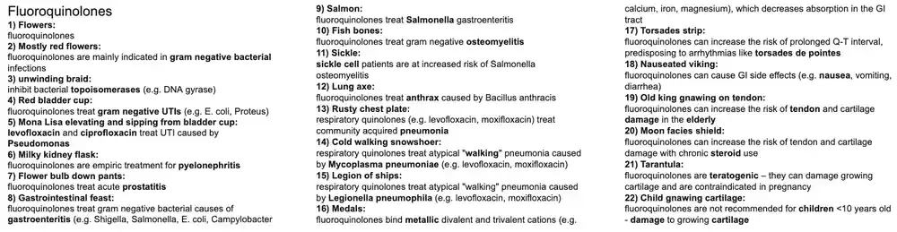
15. Tuberculosis Drugs
- Drugs: rifampin, isoniazid (INH), pyrazinamide, ethambutol (RIPE); rifabutin and streptomycin are second line.
- Regimen: RIPE for 2 months, then INH + rifampin for 4 months; INH alone (or rifampin) for latent TB; rifampin for N. meningitidis and H. influenzae prophylaxis.
- Mechanisms: INH blocks mycolic acid synthesis (prodrug, KatG); rifampin inhibits DNA-dependent RNA polymerase; ethambutol blocks arabinosyl transferase; pyrazinamide acidifies/disrupts membrane in phagolysosomes.
- Adverse effects: INH peripheral neuropathy (give B6), hepatitis, lupus, seizures; rifampin CYP inducer, orange fluids; ethambutol optic neuritis; pyrazinamide hyperuricemia/gout; all but ethambutol hepatotoxic.
- Buzzwords: slow acetylators, KatG, 'RIPE', pyridoxine, orange body fluids, red-green color blindness, 'Rifampin 4 R's'.
- 1RIPE: Combination of rifampin, isoniazid, pyrazinamide and ethambutol; multidrug therapy prevents emergence of resistant M. tuberculosis.
- 2'Was $4 for 2, Now $2 for 4': Treatment has two phases: 4 drugs (RIPE) for 2 months, then 2 drugs (isoniazid and rifampin) for 4 months.
- 3The Isolated Ranger: Represents isoniazid (INH), part of RIPE therapy.
- 4Middle lobe bullet hole: Primary TB (typically a Ghon focus in mid/lower lung zones; may cavitate).
- 5Sleeping: INH alone treats latent TB infection (typically 9 months; alternatives include rifampin alone or INH plus rifapentine).
- 6Branching cacti on wall: Mycolic acids are essential components of the mycobacterial cell wall.
- 7Mycobacteria cowboy shot off wall: INH inhibits mycolic acid synthesis, disrupting the mycobacterial cell wall.
- 8Aggravating G tailed cat: INH is a prodrug activated by mycobacterial catalase-peroxidase (KatG).
- 9Silenced G tailed cat: Resistance to INH arises from mutations or deletion of KatG (reduced activation).
- 10Bandit in stockings and gloves: INH can cause peripheral neuropathy.
- 11Slow acetyl-gunslinger: INH is metabolized by hepatic N-acetyltransferase; slow acetylators have higher drug levels and greater risk of toxicity (neuropathy, lupus).
- 12Pair of dice - sixes: INH increases pyridoxine (vitamin B6) excretion/inhibits its activation, causing B6 deficiency and neuropathy.
- 13Ungloved hand holding pair of dice: Giving pyridoxine (B6) with INH prevents peripheral neuropathy.⭐ Give B6 also in overdose-related seizures (high-dose pyridoxine is the antidote).
- 14Motion lines: INH can cause seizures (especially in overdose, via GABA synthesis depletion).
- 15Liver spot: All RIPE drugs can cause hepatotoxicity (ethambutol least).
- 16Raised LFT flag: INH causes an asymptomatic rise in transaminases; severe hepatitis is more likely in older adults, alcohol use and slow acetylators.⭐ Stop if AST/ALT > 3x ULN with symptoms or > 5x ULN without.
- 17Wolf: INH can cause drug-induced lupus (anti-histone antibodies).
- 18MUD PILES: INH overdose causes anion gap metabolic acidosis ('I' in MUDPILES) with refractory seizures.
- 19Broken chrome bumper: INH inhibits cytochrome P450 (e.g., raising phenytoin levels).
- 20The Rifle: Represents rifampin, part of RIPE.
- 21Speeding chrome bumper: Rifampin is a potent cytochrome P450 inducer, reducing levels of OCPs, warfarin, HIV protease inhibitors and others.⭐ Rifampin: 'Ramps up CYP450'.
- 22Shot RNA track switch: Rifampin binds bacterial DNA-dependent RNA polymerase (beta subunit), blocking transcription; monotherapy leads to rapid resistance.
- 23Close contact with rifle: Rifampin is used as prophylaxis for close contacts exposed to Neisseria meningitidis or Haemophilus influenzae type b.
- 24Meningitis mohawk: Neisseria meningitidis, a rifampin prophylaxis target.
- 25H plane: Haemophilus influenzae type b, a rifampin prophylaxis target.
- 26Orange fluid: Rifampin can turn urine, sweat, tears and other body fluids orange-red (and stain soft contact lenses).
- 27Ethel the Horse Whisperer: Represents ethambutol, part of RIPE.
- 28Arabian horse at the carbohydrate wall: Ethambutol blocks arabinosyl transferase, inhibiting arabinogalactan synthesis in the cell wall.
- 29Halt!: Ethambutol is bacteriostatic.
- 30Red-green blinders: Ethambutol can cause optic neuritis (decreased acuity, red-green color blindness, central scotoma); dose-dependent, check vision and color discrimination.
- 31The Pyro: Represents pyrazinamide, part of RIPE; it is activated at acidic pH in macrophages.
- 32Yellow needles: Pyrazinamide causes hyperuricemia by inhibiting renal urate excretion, with needle-shaped monosodium urate crystals.
- 33Needles in yarn ball on toe: Pyrazinamide can precipitate gout attacks (podagra).
Show the original legend picture
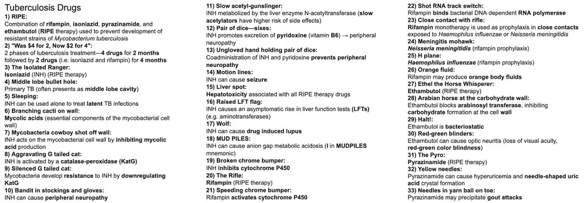
16. Leprosy Drugs
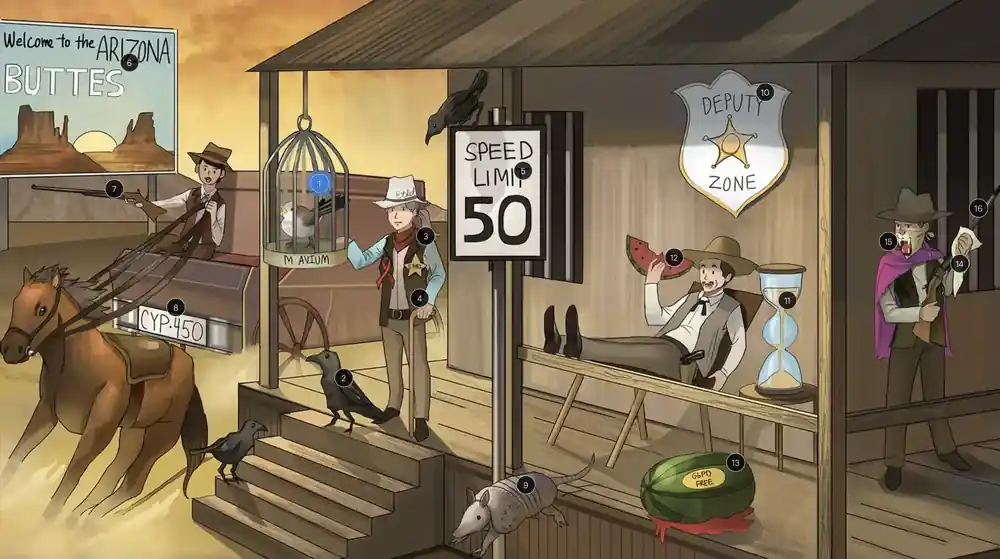
- Leprosy (M. leprae): dapsone + rifampin (tuberculoid/paucibacillary), plus clofazimine for lepromatous/multibacillary disease.
- Dapsone inhibits dihydropteroate synthase (sulfone); also used for PJP prophylaxis; clofazimine has anti-inflammatory and antimycobacterial effects.
- MAC: macrolide (azithro/clarithro) + ethambutol, +/- rifabutin; azithromycin prophylaxis when CD4 < 50 in HIV.
- Adverse effects: dapsone hemolysis in G6PD deficiency (Heinz bodies, bite cells), methemoglobinemia, agranulocytosis; clofazimine skin discoloration; rifamycins induce CYP450.
- Buzzwords: armadillos, leonine facies, Heinz bodies, rifabutin preferred over rifampin with HIV protease inhibitors.
- 1Caged mockingbird: Mycobacterium avium complex (M. avium, M. intracellulare), an opportunistic infection.
- 2Crows: A macrolide (azithromycin or clarithromycin) combined with ethambutol treats MAC infection.
- 3Sheriff Ethel: Represents ethambutol in MAC treatment.
- 4Immunocompromised cane: MAC commonly causes disseminated disease in advanced AIDS patients (low CD4).
- 5Speed limit 50: Macrolide (azithromycin) prophylaxis for MAC when CD4 < 50.
- 6Buttes: Rifabutin may be added as a third agent for MAC treatment; it is a weaker CYP inducer than rifampin, so it is preferred in HIV patients on protease inhibitors.
- 7Rifle: Represents rifampin (related to rifabutin).
- 8Speeding chrome bumper: Rifampin and rifabutin induce cytochrome P450 (rifabutin less so).
- 9Leaping armadillo: Mycobacterium leprae, the cause of leprosy (Hansen disease); armadillos are a reservoir and the organism prefers cooler body sites.
- 10Deputy zone: Represents dapsone, used to treat leprosy; it inhibits dihydropteroate synthase.
- 11Multi-lobed sand timer: Dapsone can cause agranulocytosis (neutropenia).
- 12Bite and seeds: Heinz bodies (denatured hemoglobin) form in RBCs under oxidative stress, and splenic macrophages remove them, creating bite cells.
- 13Broken G6PD-free fruit: Dapsone causes hemolytic anemia in G6PD deficiency; it can also cause methemoglobinemia.
- 14Cloth: Clofazimine treats lepromatous (multibacillary) leprosy; causes skin discoloration (red-brown/pink) and GI side effects.
- 15Lion bandana: Leonine facies (thickened skin, nodules) seen in lepromatous leprosy.
- 16Rifle: Rifampin is also used in leprosy treatment, together with dapsone.
Show the original legend picture
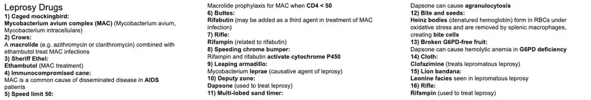
17. Amphotericin & Flucytosine
- Drugs: amphotericin B (conventional deoxycholate and liposomal), nystatin (topical/oral swish only), flucytosine (5-FC).
- Mechanism: amphotericin B and nystatin bind ergosterol and form membrane pores causing ion leakage and cell death; flucytosine is converted by fungal cytosine deaminase to 5-FU, inhibiting DNA and RNA synthesis.
- Uses: amphotericin B for severe systemic mycoses (cryptococcal meningitis with flucytosine, mucormycosis, disseminated endemic fungi, invasive Candida/Aspergillus alternatives); nystatin for oral/vaginal/skin candidiasis.
- Adverse effects: amphotericin 'shake and bake' infusion reactions (fever, chills, hypotension, headache, thrombophlebitis), nephrotoxicity with distal RTA, hypokalemia, hypomagnesemia, anemia; flucytosine - bone marrow suppression, hepatotoxicity.
- Buzzwords: 'amphoterrible'; liposomal form and saline loading reduce renal toxicity; flucytosine never used alone (resistance); cryptococcal meningitis = ampho B + flucytosine then fluconazole.
- 1Amphibian: Amphotericin B is a polyene antifungal with the broadest spectrum of the systemic antifungals (Candida, Aspergillus, Cryptococcus, Mucor/Rhizopus, endemic dimorphic fungi).
- 2Non-sterol: Fungal cell membranes contain ergosterol instead of cholesterol, which is the target that gives polyenes selectivity.
- 3Holes in amphibian tank: Amphotericin B and nystatin bind ergosterol and insert into the membrane to form pores, causing leakage of K+ and other cytoplasmic contents and cell death (fungicidal).⭐ Polyenes = pores. Amphotericin 'tears' holes in membranes.
- 4Organ systems: Amphotericin B is used for severe, life-threatening systemic fungal infections: cryptococcal meningitis, invasive mucormycosis, disseminated histoplasmosis/blastomycosis/coccidioidomycosis, and severe Candida or Aspergillus infection (when other agents fail).
- 5Ivy: Amphotericin B is not absorbed orally and is given IV for systemic disease (oral use only for GI-luminal effect).
- 6Fat bubble: Liposomal amphotericin B has a lipid carrier that reduces binding to human cholesterol-containing membranes, giving less nephrotoxicity and fewer infusion reactions (at higher cost).⭐ Liposomal amphotericin = less toxic but more expensive.
- 7Amphibian binding cholesterol necktie: Toxicity arises because amphotericin also binds cholesterol in mammalian membranes, which explains renal, cardiac and infusion toxicities (nickname: 'amphoterrible').
- 8Fainting and holding head: Immediate infusion-related toxicities include hypotension and headache (via cytokine release); slow infusion and pre-medication (acetaminophen, diphenhydramine, hydrocortisone) can reduce them.
- 9Shake and bake: Fevers and chills ('shake and bake') are infusion-related reactions to amphotericin B from IL-1/TNF release.
- 10Tongue on brain: Intravenous amphotericin penetrates the CSF poorly, so intrathecal administration is sometimes used for CNS fungal infection (e.g., coccidioidal meningitis), although IV amphotericin with flucytosine is effective for cryptococcal meningitis.
- 11Shaking brain: Intrathecal amphotericin can cause CNS toxicity such as seizures, headache, arachnoiditis and neurologic deficits.
- 12Blue veiny pattern: Thrombophlebitis (peripheral vein irritation) is an infusion-related toxicity, so a central line is often used.
- 131-shaped acid tube: Cumulative nephrotoxicity from amphotericin includes distal (type 1) renal tubular acidosis, azotemia and decreased GFR from afferent arteriolar vasoconstriction and tubular damage.⭐ Amphotericin: hypoK, hypoMg, type 1 RTA, decreased GFR.
- 14Depleted potassium banana peel: Type 1 (distal) RTA with increased K+ wasting causes hypokalemia (monitor and replace potassium).
- 15Magnet falling into sink: Amphotericin causes renal magnesium wasting and hypomagnesemia; electrolytes must be monitored and replaced.
- 16Emergency saline wash: Pre-hydration with IV normal saline (sodium loading) before amphotericin decreases the risk and severity of nephrotoxicity.⭐ Saline loading is renal protection for amphotericin.
- 17Cracked, drained kidney and white frog: Damage to renal peritubular interstitial cells reduces erythropoietin production, causing normocytic normochromic anemia with amphotericin B.
- 18Flute: Flucytosine (5-FC) is an oral antifungal pyrimidine analog.
- 19C turned into U: Fungal cytosine deaminase converts flucytosine to 5-fluorouracil (5-FU), which humans do little of (selective toxicity); 5-FU is then converted to 5-FdUMP (inhibits thymidylate synthase) and 5-FUTP (incorporated into RNA).⭐ Flucytosine resistance: loss of cytosine deaminase or permease.
- 20Smeared double helix and single strand: Flucytosine metabolites inhibit fungal DNA synthesis (thymidylate synthase) and disrupt RNA function, so it is fungistatic/fungicidal depending on species. Adverse effects: dose-dependent bone marrow suppression (anemia, leukopenia, thrombocytopenia), hepatotoxicity, GI upset.⭐ It is never used as monotherapy because of rapid resistance.
- 21Meningitis helmet: Flucytosine plus amphotericin B (induction) is the preferred regimen for cryptococcal meningitis, followed by fluconazole consolidation/maintenance.
- 22'Crypt': Cryptococcus neoformans (encapsulated yeast, India ink positive, in AIDS patients with CD4 <100) is treated with amphotericin B + flucytosine, then fluconazole.
- 23Nyce: Nystatin is a polyene with the same mechanism as amphotericin B (binds ergosterol to form pores) but is too toxic for systemic use, so it is used only topically or as an oral swish/swallow.
- 24Canada: Nystatin is active against Candida species (candidiasis).
- 25Snow on crotch: Topical nystatin (creams, vaginal tablets) treats mucocutaneous candidiasis such as vulvovaginal candidiasis and intertrigo/diaper dermatitis.
- 26Swish and swallow drinking fountain: Oral nystatin suspension is 'swish and swallow' for oropharyngeal candidiasis (thrush); it acts locally and is not absorbed from the GI tract.⭐ Clotrimazole troches are an alternative for oral thrush.
Show the original legend picture
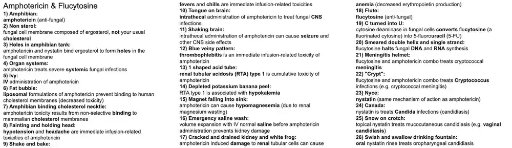
18. Azoles
- Drugs ('-conazole'): fluconazole, itraconazole, voriconazole, posaconazole, ketoconazole, clotrimazole, miconazole.
- Mechanism: inhibit fungal cytochrome P-450 14-alpha-demethylase, blocking lanosterol -> ergosterol and disrupting the fungal membrane (fungistatic).
- Uses: fluconazole - Candida (thrush, vaginal, esophageal), Cryptococcus; voriconazole - invasive aspergillosis; itraconazole - dimorphic fungi, onychomycosis, sporotrichosis; topical clotrimazole/miconazole - tinea, vaginal candidiasis; ketoconazole - topical tinea, off-label Cushing.
- Adverse effects: CYP450 inhibition (drug interactions), hepatotoxicity, QT prolongation; voriconazole - visual disturbances; itraconazole - negative inotrope (CHF); ketoconazole - blocks steroid synthesis (gynecomastia, adrenal insufficiency); teratogenic.
- Buzzwords: 'cone-azole'; fluconazole penetrates CSF; itraconazole/ketoconazole need gastric acid (avoid PPIs); voriconazole = scarecrow (Aspergillus) + color/blurry vision.
- 1Pine cones: Azole antifungals are named '-conazole' (fluconazole, itraconazole, voriconazole, posaconazole, ketoconazole, clotrimazole, miconazole); the pine-cone images cue the 'cone' in the suffix.
- 2Emerald perimeter: Ergosterol is the major sterol in the fungal cell membrane (mammalian membranes use cholesterol), so inhibiting its synthesis is selectively toxic.
- 3Crushed emerald builder: Azoles inhibit ergosterol synthesis, depleting ergosterol and causing accumulation of toxic methylated sterols that impair membrane function (fungistatic).
- 4Lane closed: Azoles block conversion of lanosterol to ergosterol by inhibiting the fungal cytochrome P-450 enzyme 14-alpha-demethylase.⭐ Azoles block 14-alpha-demethylase; terbinafine blocks squalene epoxidase.
- 5Broken chrome bumper: Azoles inhibit fungal CYP450 (14-alpha-demethylase) and also inhibit human CYP450 enzymes, causing many drug interactions (raising levels of warfarin, statins, calcineurin inhibitors, etc.).
- 6Car-crushing vortex: Voriconazole inhibits human CYP450 enzymes (CYP2C19, 2C9, 3A4), so it raises levels of many co-administered drugs; it is also metabolized by CYP2C19 (polymorphisms alter levels).⭐ Itraconazole and ketoconazole are strong 3A4 inhibitors; fluconazole is moderate.
- 7Blurry flashes: Voriconazole commonly causes transient visual disturbances (blurry vision, photopsia/flashes of light). Other effects: hepatotoxicity, visual hallucinations, photosensitivity/skin cancer.
- 8Sepia tone: Voriconazole may alter color vision (visual disturbance is transient and dose-related).
- 9Aspirating scarecrow with lung hyphae: Voriconazole is the first-line treatment for invasive aspergillosis (Aspergillus fumigatus: acute-angle, septate, branching hyphae), including pulmonary disease in immunocompromised hosts.⭐ Aspergillus -> voriconazole; Mucor -> amphotericin B (voriconazole is ineffective).
- 10Canada: Voriconazole is active against Candida species, including esophageal candidiasis and some fluconazole-resistant strains.
- 11Flying monkey: Fluconazole is an azole antifungal ('Flu' - Wizard of Oz flying monkey) with excellent oral bioavailability and penetration into CSF.
- 12Canada: Fluconazole treats Candida albicans infections (oral, vaginal, esophageal, and invasive disease when susceptible); C. glabrata and C. krusei are often resistant.
- 13White patches: Mucocutaneous candidiasis presents as white plaques (thrush) that scrape off, leaving an erythematous base; KOH shows yeast with pseudohyphae.
- 14Snow on crotch: A single 150 mg oral dose of fluconazole treats uncomplicated vulvovaginal candidiasis. Fluconazole is avoided in pregnancy (teratogenic at high doses).
- 15Snow in gutter: Systemic fluconazole is first-line for esophageal candidiasis (odynophagia, AIDS-defining) and is often tried empirically before endoscopy.
- 16Crypt: Fluconazole treats Cryptococcus neoformans infection: consolidation and maintenance therapy for cryptococcal meningitis after amphotericin B + flucytosine induction; also used for milder disease.
- 17Meningitis mohawk helmets: Fluconazole penetrates the CNS/CSF very well, which is why it is used for cryptococcal meningitis (and coccidioidal meningitis).⭐ Fluconazole = best CSF penetration of the azoles.
- 18Good witch: Itraconazole (Glinda the good witch, 'I'-traconazole) is an azole for dimorphic fungi and dermatophytes; it is an inhibitor of CYP3A4, has negative inotropy (avoid in heart failure) and needs gastric acid for absorption (capsule).
- 19Dimorphic butterfly: Itraconazole treats endemic dimorphic fungi (mold in the environment at 25 C, yeast in tissue at 37 C): histoplasmosis, blastomycosis, coccidioidomycosis (fluconazole preferred for meningitis) and sporotrichosis (lymphocutaneous, drug of choice).⭐ Mnemonic: Blasto, Histo, Cocci, Sporo respond to itraconazole; Paracoccidioides too.
- 20Tarnished slipper toes: Itraconazole treats onychomycosis (and dermatophyte infections), though terbinafine is first-line for nails.
- 21Tin man: Tinea (ringworm) infections are caused by dermatophytes (Trichophyton, Microsporum, Epidermophyton).
- 22Close trim: Topical clotrimazole is used for tinea corporis, cruris and pedis (athlete's foot), and for oral thrush as troches.
- 23My cone: Topical miconazole is used for tinea infections (dermatophytosis) and candidal skin infections; it is available OTC.
- 24Snow on crotch: Topical clotrimazole and miconazole (creams or suppositories) treat vulvovaginal candidiasis.
- 25Tinman's key: Topical ketoconazole (cream or shampoo) treats dermatophytosis such as tinea corporis, and seborrheic dermatitis/dandruff and tinea versicolor (Malassezia).
- 26Adrenal lock: Ketoconazole inhibits human steroidogenic CYP enzymes (CYP17: 17-alpha-hydroxylase and 17,20-lyase, plus cholesterol side-chain cleavage), blocking conversion of pregnenolone to 17-hydroxypregnenolone and thereby cortisol and sex hormone synthesis. Systemic ketoconazole also causes hepatotoxicity and QT prolongation, and requires gastric acid for absorption.⭐ Ketoconazole: 'kills the adrenals' - can cause adrenal insufficiency.
- 27Male and female symbols: Because it inhibits CYP17, ketoconazole decreases synthesis of androgens (testosterone) and estrogens.
- 28Moon face: Ketoconazole is used (off-label) to reduce excess cortisol in Cushing syndrome (moon facies, buffalo hump, striae) by blocking adrenal steroid synthesis; other agents are metyrapone, mitotane and osilodrostat.
- 29Breast bumps: Ketoconazole's anti-androgenic effects cause gynecomastia, decreased libido and impotence in men.
Show the original legend picture
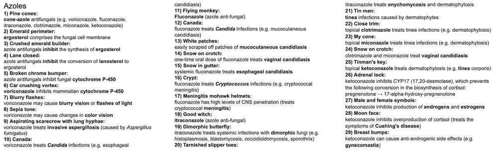
19. Griseofulvin, Terbinafine, Echinocandins
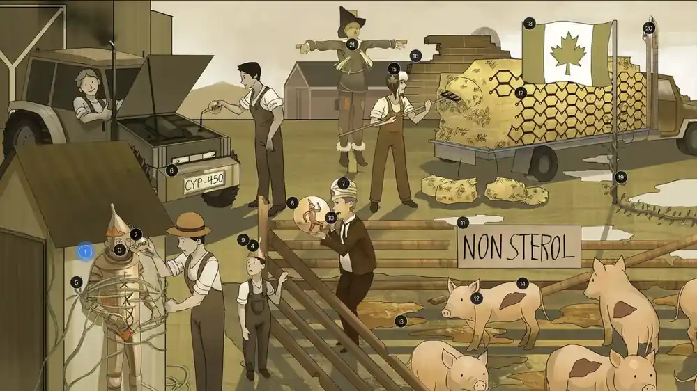
- Antifungal targets: ergosterol (polyenes bind it; azoles and terbinafine block its synthesis), cell wall (echinocandins), microtubules (griseofulvin), DNA/RNA synthesis (flucytosine).
- Griseofulvin: binds microtubules/mitotic spindle (fungistatic), deposits in keratin; Terbinafine: inhibits squalene epoxidase (fungicidal); Echinocandins (caspofungin, micafungin, anidulafungin): inhibit beta-1,3-glucan synthase.
- Uses: griseofulvin and terbinafine for dermatophytes/tinea capitis (children); terbinafine first-line for onychomycosis; echinocandins first-line for candidemia, esophageal candidiasis, and salvage for Aspergillus.
- Adverse effects: griseofulvin - CYP inducer (lowers warfarin/OCP), hepatotoxic, teratogenic; terbinafine - GI upset, hepatotoxicity, taste change; echinocandins - mild, flushing, LFT rise (IV only).
- Buzzwords: 'grise = grease/keratin deposit'; squalene accumulation (terbinafine); '-fungin' = cell wall; no activity of echinocandins against Cryptococcus; ergosterol = fungal membrane sterol.
- 1Rusty tin man: Dermatophytes (Trichophyton, Microsporum, Epidermophyton) infect keratinized tissue and cause tinea: corporis, pedis, cruris, capitis (scalp/hair) and onychomycosis (nails). KOH prep shows septate hyphae.
- 2Grease: Griseofulvin is an oral antifungal used only for dermatophyte infections.
- 3Grease in mouth: Griseofulvin must be taken orally (it is ineffective topically); it is deposited in newly formed keratin, so it treats dermatophytosis of skin, hair and nails, requiring weeks to months. Absorption is improved by fatty meals.
- 4Tin man hat: Oral griseofulvin and oral terbinafine are first-line for tinea capitis in children (terbinafine is better for Trichophyton, griseofulvin for Microsporum).⭐ Tinea capitis always needs a systemic agent; topicals do not penetrate the hair follicle.
- 5Broken spindle vines: Griseofulvin binds fungal microtubules (tubulin), disrupting the mitotic spindle and halting mitosis; it is fungistatic.⭐ Griseofulvin: microtubules, like the 'vinca/taxane' idea but in fungi.
- 6Greased-up chrome bumper: Griseofulvin induces hepatic cytochrome P-450, lowering levels of warfarin and oral contraceptives. Other effects: hepatotoxicity, headache, teratogenicity (contraindicated in pregnancy), disulfiram-like reaction, and porphyria is a contraindication.⭐ Griseofulvin = CYP inducer (opposite of azoles, which inhibit).
- 7Turban: Terbinafine is an oral and topical antifungal (allylamine) active against dermatophytes.
- 8Little tin man: Topical terbinafine treats tinea corporis, cruris and pedis (dermatophytosis of the skin).
- 9Tin man hat: Oral terbinafine (and griseofulvin) is first-line for tinea capitis in children; terbinafine is especially effective for Trichophyton species.
- 10Biting nails: Oral terbinafine is the first-line treatment for onychomycosis (nail infection), given for about 6-12 weeks because it concentrates in nail and skin; it is fungicidal.⭐ Terbinafine is superior to griseofulvin and itraconazole for onychomycosis.
- 11Non-sterol: Fungal cell membranes contain ergosterol rather than cholesterol, the basis of selective toxicity for polyenes and azoles, and the pathway terbinafine blocks upstream.
- 12Squealing pig pen: Terbinafine inhibits squalene epoxidase, blocking conversion of squalene to lanosterol/ergosterol. Ergosterol deficiency plus toxic intracellular squalene accumulation disrupts the membrane and kills the fungus (fungicidal).⭐ Terbinafine blocks squalene epoxidase; azoles block 14-alpha-demethylase.
- 13Mud puddles: Terbinafine commonly causes GI upset (nausea, vomiting, diarrhea); also taste disturbance, headache and rash.
- 14Liver spot: Terbinafine can cause hepatotoxicity (rarely liver failure), so check LFTs before and during therapy and avoid in active liver disease. It is also a CYP2D6 inhibitor.⭐ Monitor LFTs with terbinafine, griseofulvin and ketoconazole.
- 15Echino-Canadian fur cap: Echinocandins are the '-fungins': caspofungin, micafungin, anidulafungin (all IV only).
- 16Crumbling brick wall: Echinocandins target the fungal cell wall (which human cells lack), so they are very well tolerated; adverse effects are mild (infusion-related flushing from histamine release, elevated LFTs, GI upset).
- 17Polysaccharide-shaped wall: Echinocandins inhibit beta-(1,3)-D-glucan synthase, blocking synthesis of the cell-wall polysaccharide glucan; they are fungicidal against Candida and fungistatic against Aspergillus.⭐ Echinocandins have no activity against Cryptococcus or Mucor.
- 18Canada: Echinocandins have excellent activity against Candida, including azole-resistant species (C. glabrata, C. krusei) and biofilm-forming strains, and are first-line for candidemia/invasive candidiasis (esp. in the ICU).
- 19Ivy: Echinocandins are given IV (poor oral bioavailability) and are first-line for invasive candidiasis/candidemia.
- 20Exhaust pipe with snow: Echinocandins (caspofungin, micafungin, anidulafungin) treat esophageal candidiasis, an AIDS-defining illness; fluconazole is typically tried first for mild disease.
- 21Scarecrow with lung hyphae: Echinocandins have activity against Aspergillus fumigatus but are used as salvage or second-line therapy (often combined); voriconazole is first-line for invasive aspergillosis, with amphotericin B as an alternative.
Show the original legend picture
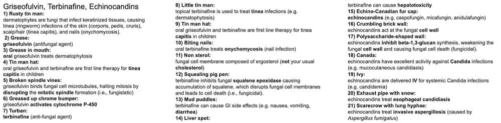
20. Acyclovir, Valacyclovir, Famciclovir
- Drugs: acyclovir, valacyclovir (prodrug), famciclovir (prodrug of penciclovir); related: cidofovir, foscarnet for resistant HSV/CMV.
- Mechanism: guanosine analogs activated by viral thymidine kinase (HSV/VZV) then cellular kinases to the triphosphate, which inhibits viral DNA polymerase and terminates the chain (lack of 3'-OH).
- Use: HSV (genital herpes, encephalitis, neonatal), VZV (shingles, varicella), and prophylaxis in immunocompromised hosts; valacyclovir/famciclovir preferred for zoster (better bioavailability, less frequent dosing).
- Adverse effects: nephrotoxicity (crystalline nephropathy, interstitial nephritis) with IV use; neurotoxicity (delirium, hallucinations); dose-adjust in renal impairment; not active against CMV.
- Buzzwords: 'guanosine analog, TK-dependent'; resistance = TK-deficient mutants -> foscarnet; foscarnet and cidofovir need no viral TK; hydrate patients; start zoster therapy within 72 h.
- 1Hermes: Herpes simplex virus (HSV-1 and HSV-2), the target for acyclovir-class drugs (HSV-1: oral/labial, encephalitis; HSV-2: genital, neonatal).
- 2Recycling: Acyclovir is an antiviral used for HSV (and VZV) infection.
- 3Purine-shaped luggage: Acyclovir is a guanosine (purine) nucleoside analog.
- 4Hermes with 'P' luggage tag: Acyclovir is first phosphorylated to acyclovir monophosphate by virus-encoded thymidine kinase (HSV/VZV), so activation is selective for infected cells.
- 5Bag checkers with 'P' tags: Cellular kinases then convert acyclovir monophosphate to the active triphosphate.
- 6Branching double-helix conveyor belts: Viral DNA-dependent DNA polymerase replicates herpesvirus DNA; acyclovir triphosphate preferentially inhibits it over the host enzyme.
- 7Baggage jam: Acyclovir triphosphate competes with dGTP, is incorporated into viral DNA and, lacking a 3'-OH, causes obligate chain termination, halting replication.
- 8'Rate limit': Viral thymidine kinase carries out the first (rate-limiting, selective) activation step of acyclovir, so uninfected cells activate very little drug.
- 9Closed baggage check: Resistance results from absent or altered viral thymidine kinase (or, less often, altered DNA polymerase); these strains are treated with foscarnet (or cidofovir).⭐ TK-deficient HSV -> foscarnet.
- 10Security officer Cid: Cidofovir is an antiviral (cytosine nucleotide analog) with activity against CMV and acyclovir-resistant HSV; it is nephrotoxic, so it is given with probenecid and IV saline hydration.
- 11'P' access badge: Cidofovir is a nucleotide analog that does not require viral kinase activation (it only needs host cellular kinases), so it works against TK-deficient viruses.
- 12Luggage car net: Foscarnet is a pyrophosphate analog antiviral used for CMV (including ganciclovir-resistant) and acyclovir-resistant HSV; adverse effects: nephrotoxicity, electrolyte disturbances (hypocalcemia, hypomagnesemia, hypokalemia, hypophosphatemia) and seizures.
- 13Conveyor-belt stop switch: Cidofovir (after cellular phosphorylation) and foscarnet inhibit viral DNA polymerase directly, without needing activation by viral thymidine kinase; foscarnet binds the pyrophosphate-binding site.
- 14Valet parking: Valacyclovir is the L-valyl ester prodrug of acyclovir, converted in the liver/gut to acyclovir with much higher oral bioavailability (about 55% vs 15-20%).⭐ Famciclovir is the prodrug of penciclovir.
- 15Daily rate for frequent flyers: Daily valacyclovir (or acyclovir/famciclovir) suppressive therapy is indicated for patients with frequent genital herpes recurrences (generally 6 or more per year); it reduces recurrences and transmission.
- 16Open mouth: Valacyclovir has better oral absorption than acyclovir, allowing less frequent dosing and higher plasma levels.
- 17Ivy: IV acyclovir is used for severe HSV or VZV disease (encephalitis, disseminated/neonatal infection, severe infections in immunocompromised hosts).
- 18Red winged helmet: IV acyclovir is the treatment of choice for HSV encephalitis (temporal lobe involvement, diagnosed by CSF HSV PCR); start empirically without waiting for confirmation.
- 19Baby Hermes helmet: IV acyclovir treats neonatal HSV infection (skin/eye/mouth, CNS or disseminated disease).
- 20Zeus: Varicella-zoster virus (VZV): primary infection causes chickenpox, and latent virus resides in dorsal root/sensory ganglia.
- 21Shingles: VZV reactivation causes herpes zoster (shingles), a painful dermatomal vesicular rash; postherpetic neuralgia is a complication.
- 22Family values: Valacyclovir and famciclovir are preferred for VZV because they have better bioavailability and less frequent dosing than acyclovir; VZV is less susceptible to acyclovir than HSV, so higher doses are needed.
- 233 days: For zoster, antivirals work best when started within 72 hours of rash onset (they shorten the course and may decrease postherpetic neuralgia).⭐ Start zoster antivirals within 72 h of rash.
- 24Prepare: Antiviral prophylaxis can prevent HSV reactivation in selected high-risk patients.
- 25Cane: HSV prophylaxis (acyclovir/valacyclovir) is important in immunocompromised patients (e.g., transplant, chemotherapy, advanced HIV) because reactivation can be severe or disseminated.
- 26Pregnant: In pregnant women with recurrent genital herpes, suppressive acyclovir or valacyclovir from about 36 weeks reduces recurrence and viral shedding at delivery; cesarean delivery is indicated for active lesions/prodrome at labor.
- 27Kidney sharps: IV acyclovir can cause crystalline nephropathy (needle-shaped crystals in the tubules, with rapid infusion or dehydration) and interstitial nephritis; adjust dose in renal impairment.
- 28Staying hydrated: Adequate hydration (and slow IV infusion) prevents acyclovir crystal nephropathy and nephrotoxicity.
- 29Disoriented kid: Acyclovir can cause neurotoxicity (delirium, confusion, tremor, vertigo, hallucinations), especially with renal impairment and high doses.
Show the original legend picture
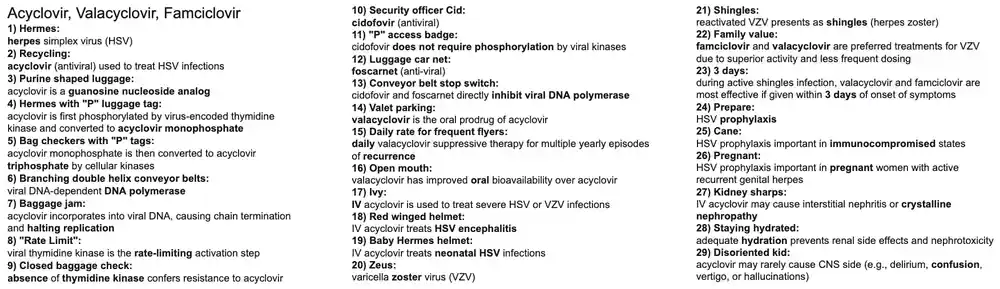
21. Ganciclovir, Valganciclovir, Foscarnet, Cidofovir
- Drugs: ganciclovir, valganciclovir (oral prodrug), foscarnet, cidofovir - all treat CMV (also resistant HSV/VZV for foscarnet and cidofovir).
- Mechanism: ganciclovir needs viral UL97 kinase activation then inhibits viral DNA polymerase; foscarnet (pyrophosphate analog) and cidofovir (monophosphate analog) need no viral kinase.
- Indications: CMV retinitis, colitis, transplant prophylaxis; foscarnet/cidofovir for ganciclovir-resistant CMV and acyclovir-resistant HSV/VZV.
- Adverse effects: ganciclovir myelosuppression; foscarnet nephrotoxicity, hypoCa/Mg/K, seizures; cidofovir nephrotoxicity (give probenecid + saline).
- Buzzwords: UL97 resistance, pizza-pie retinitis, CD4 below 50, avoid with zidovudine, probenecid pairing with cidofovir.
- 1Mega-Lo Market: Cytomegalovirus (CMV) is a dsDNA herpesvirus (HHV-5) causing retinitis, colitis, esophagitis, and pneumonitis in immunocompromised patients, and congenital infection.
- 2Can recycling: Ganciclovir is an IV guanosine nucleoside analog antiviral, the first-line treatment for CMV (acyclovir is not effective for CMV).
- 3Pizza: CMV retinitis causes a 'pizza pie' fundus with retinal hemorrhages and infiltrates; it is treated with ganciclovir (or valganciclovir).⭐ Pizza-pie retinopathy = CMV retinitis in AIDS.
- 450 items or less: CMV disease (retinitis, colitis) is most common in HIV patients with CD4+ count below 50 cells/uL.
- 5Market worker with P label gun: Ganciclovir is first monophosphorylated by a CMV-encoded viral kinase (UL97 phosphotransferase); mutations in UL97 cause ganciclovir resistance.⭐ UL97 mutation = ganciclovir resistance; treat with foscarnet.
- 6Customers with P label guns: Cellular kinases then convert ganciclovir monophosphate to the active ganciclovir triphosphate.
- 7Branching double helix conveyor belts: Viral DNA-dependent DNA polymerase (CMV UL54) replicates viral DNA and is the target of these drugs.
- 8Grocery jam: Ganciclovir triphosphate competitively inhibits viral DNA polymerase and is incorporated into viral DNA, terminating chain elongation and halting synthesis.
- 9Value: Valganciclovir is the oral valine ester prodrug of ganciclovir.
- 10Open mouth: Valganciclovir has much better oral bioavailability than ganciclovir, so it is used for oral therapy and prophylaxis.
- 11Organs on ice: Valganciclovir or ganciclovir is used for CMV prophylaxis and preemptive treatment in high-risk solid organ and bone marrow transplant recipients (e.g. CMV-negative recipient of CMV-positive organ).
- 12Eaten marrow: Ganciclovir and valganciclovir cause bone marrow suppression (neutropenia, anemia, thrombocytopenia); they are also teratogenic and carcinogenic in animals.⭐ Neutropenia is the dose-limiting toxicity of ganciclovir.
- 13Princess Izolde: Myelosuppression is additive in patients also taking zidovudine (AZT), so the combination should be avoided.
- 14Bypassed P labeler: Foscarnet does not require activation by viral kinase (or any phosphorylation), so it is active against ganciclovir-resistant (UL97) CMV and acyclovir-resistant HSV and VZV (thymidine kinase mutants).⭐ Foscarnet = treatment for TK-deficient HSV and UL97-mutant CMV.
- 15Car net: Foscarnet is an IV pyrophosphate analog antiviral that binds the pyrophosphate-binding site of viral DNA polymerase (and HIV reverse transcriptase).
- 16Spilled kidney beans: Foscarnet is nephrotoxic and may cause acute kidney injury; hydration with saline before infusion reduces risk.
- 17Broken milk bottles: Foscarnet chelates divalent cations and can cause hypocalcemia (low ionized calcium).
- 18Falling magnets: Foscarnet can cause hypomagnesemia.
- 19Banana peel: Foscarnet can cause hypokalemia (also hypo- or hyperphosphatemia).
- 20Shaking: Foscarnet can induce seizures, largely secondary to electrolyte disturbances (low calcium and magnesium).
- 21Security officer Cid: Cidofovir is an IV nucleotide (cytosine monophosphate) analog antiviral used for CMV retinitis.
- 22P access badge: Cidofovir is already a monophosphate analog, so it needs only host cellular kinases and no viral kinase; it is active against acyclovir-resistant HSV and ganciclovir-resistant CMV.
- 23Conveyor belt stop switch: Cidofovir (as the diphosphate) and foscarnet directly inhibit viral DNA polymerase without needing viral kinase activation.
- 24Broken kidney: Cidofovir is dose-limiting nephrotoxic (proximal tubule), causing proteinuria, azotemia, and metabolic acidosis (Fanconi-like); it can also cause neutropenia and ocular hypotony.⭐ Cidofovir kidney toxicity is reduced with probenecid and saline.
- 25Probation officer Cid: Probenecid blocks tubular secretion (OAT transporters) of cidofovir into proximal tubular cells, raising levels while limiting nephrotoxicity; IV saline hydration is also given.
- 26No drugs touching kidney: Probenecid inhibits renal tubular secretion of weak organic acids, raising plasma levels of penicillins, methotrexate, NSAIDs, and cephalosporins; it also inhibits urate reabsorption (uricosuric for gout).
Show the original legend picture
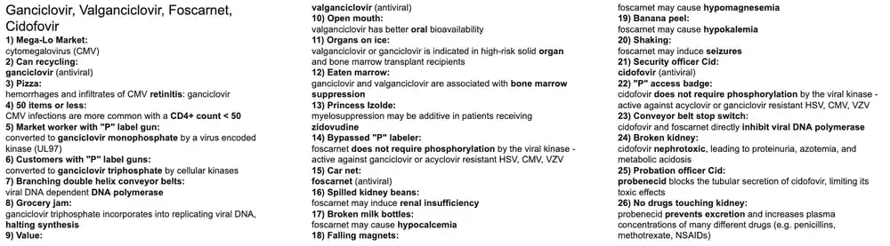
22. NRTIs
- NRTIs: zidovudine (AZT), lamivudine (3TC), emtricitabine (FTC), abacavir (ABC), tenofovir (TDF/TAF); older d-drugs stavudine and didanosine.
- Mechanism: prodrug analogs phosphorylated by host kinases; competitively inhibit reverse transcriptase and terminate DNA chain elongation because they lack a 3'-OH.
- Use: backbone of combination ART (2 NRTIs + integrase inhibitor); zidovudine in pregnancy/perinatal prophylaxis; tenofovir/emtricitabine for PrEP; lamivudine, tenofovir, emtricitabine also active against HBV.
- Adverse effects: mitochondrial toxicity (lactic acidosis, neuropathy, pancreatitis, lipodystrophy, steatosis); zidovudine - anemia/neutropenia; abacavir - HLA-B*57:01 hypersensitivity and CAD; tenofovir - nephrotoxicity, bone loss; emtricitabine - hyperpigmentation.
- Buzzwords: 'reverse transcriptase chain terminators'; abacavir = HLA-B*57:01; tenofovir = kidney and bone; zidovudine = marrow; '-dine' suffix is unreliable; stop HBV-active drugs carefully.
- 1Knights of the Round Table: NRTIs (nucleoside/nucleotide reverse transcriptase inhibitors) are the backbone of ART; typical regimens use two NRTIs plus a third drug.
- 2'Reverso transcriptum': NRTIs competitively inhibit HIV reverse transcriptase.
- 3Nucleoside-shaped mace: NRTIs are nucleoside/nucleotide analogs that are incorporated into the growing viral DNA strand.
- 4Broken spike: NRTIs lack a 3'-OH group, so no further phosphodiester bond can form: obligate chain termination.
- 5Broken double-helix bookmark: Incorporation of an NRTI causes premature chain termination of viral DNA.
- 6Page 3' to 5': NRTIs inhibit formation of the next 3'-to-5' phosphodiester bond.
- 7Three activating 'P' scrolls: Nucleoside analogs need three intracellular phosphorylations by host kinases to become active.
- 8Woodgrain cristae: NRTIs can cause mitochondrial toxicity via inhibition of mitochondrial DNA polymerase gamma (neuropathy, pancreatitis, lipodystrophy, hepatic steatosis, lactic acidosis).
- 9Centrally fat horse with thin stick legs: NRTIs (especially stavudine and zidovudine) can cause lipodystrophy, with fat redistribution from the extremities and face to the trunk/abdomen.
- 10White glove service: NRTIs, especially stavudine and didanosine, can cause peripheral neuropathy.
- 11Sour milk: Lactic acidosis is a rare but serious NRTI class effect due to mitochondrial toxicity.
- 12Dining at the feast: Several NRTIs end in '-dine' (lamivudine, stavudine, zidovudine, didanosine), but abacavir, tenofovir and emtricitabine do not.
- 13Sir Lancelot: Lamivudine (3TC) is a cytosine nucleoside analog NRTI.
- 14Bee-Hippo sigil: Lamivudine, tenofovir and emtricitabine are also active against hepatitis B, so they are useful in HIV/HBV coinfection (and flares can occur when stopped).⭐ Check HBV status before starting or stopping them.
- 15Excalibur: Emtricitabine (FTC) is a cytosine nucleoside analog NRTI.
- 16Dark gloves: Emtricitabine can cause hyperpigmentation of the palms and soles.
- 17Sir Tristan sailing on the TIDE: Tenofovir is a nucleotide analog (monophosphate) RTI, available as TDF or TAF.⭐ Tenofovir = nucleoTIDe.
- 18Two 'P' scrolls under Tristan's arm: Tenofovir needs only two phosphorylations since it is already a nucleotide (monophosphate) analog.
- 19Sailing on the TIDE: Tenofovir is a nucleotide analog and needs only two activating phosphorylations by host cell enzymes, versus three for nucleosides.
- 20Leaking cracked kidney-shaped boat: Tenofovir (especially TDF) can cause nephrotoxicity (proximal tubular injury, Fanconi syndrome, acute kidney injury), so monitor creatinine and dose-adjust in renal impairment. TAF has less renal toxicity.
- 21Broken bone oar: Tenofovir (especially TDF) can decrease bone mineral density (osteopenia/osteoporosis), also related to proximal tubular phosphate wasting; TAF is gentler on bone.
- 22Tristan's PPX shield: Tenofovir plus emtricitabine is used for HIV pre-exposure prophylaxis (PrEP) in high-risk HIV-negative people; tenofovir is also active against HBV.
- 23Excalibur's PPX shield: Emtricitabine combined with tenofovir (TDF/FTC or TAF/FTC) is the standard PrEP regimen, taken daily; rule out HIV infection and check renal function before and during use.
- 24Princess Izolde and dove sigil: Zidovudine is a thymidine analog NRTI. Intravenous zidovudine is given during labor to pregnant women with viral load >1000 copies/mL (or unknown) near delivery in addition to their regular ART, and oral zidovudine is given to the newborn, to reduce vertical transmission (refer to current guidelines).⭐ Pregnant, high viral load near delivery -> IV zidovudine intrapartum.check original
- 25Devoured marrow: Zidovudine causes bone marrow suppression.
- 26Pale white dress: Zidovudine causes anemia (macrocytic).
- 27Sand timer: Zidovudine can cause neutropenia/agranulocytosis.
- 28Abracadabra: Abacavir (ABC) is a guanosine analog NRTI.
- 29HLA-B spellbook: Abacavir hypersensitivity is associated with HLA-B*57:01; screen before use.⭐ Test HLA-B*57:01 before abacavir.
- 30Delayed reaction to rash: Abacavir causes a delayed (type IV, T-cell mediated) multi-organ hypersensitivity (fever, rash, GI/respiratory symptoms); stop the drug and never rechallenge.
- 31Clogged potion test tube: Abacavir is associated with an increased risk of coronary artery disease/myocardial infarction and cerebrovascular events, so avoid it in patients with high cardiovascular risk.
- 32Battle plan with 2 knights and 1 key deflector shield: Initial ART is combination therapy (cART) started as soon as possible after diagnosis: typically 2 NRTIs (e.g., tenofovir + emtricitabine) plus 1 integrase strand transfer inhibitor (e.g., dolutegravir or bictegravir).⭐ Preferred initial regimen = 2 NRTIs + INSTI.
Show the original legend picture
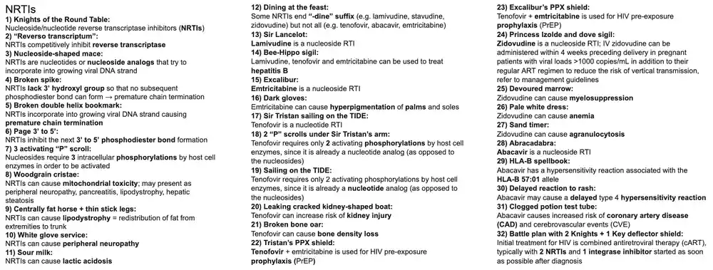
23. NNRTIs
- Drugs: efavirenz, nevirapine, delavirdine, rilpivirine, etravirine, doravirine.
- Mechanism: bind an allosteric site next to the active site of HIV-1 reverse transcriptase (non-competitive inhibition); no phosphorylation needed; inactive against HIV-2.
- Use: HIV-1 combination ART with 2 NRTIs (efavirenz historically first-line); nevirapine for prevention of vertical transmission in resource-limited settings.
- Adverse effects: efavirenz - vivid dreams, insomnia, dizziness, psychiatric effects, teratogenicity concern; nevirapine - hepatotoxicity and SJS/TEN rash; CYP450 induction (efavirenz, nevirapine) or inhibition (delavirdine); rash class effect.
- Buzzwords: 'NNRTIs: non-nucleoside, no phosphorylation'; 'efavirenz = vivid dreams'; nevirapine = rash + liver failure; HIV-2 is intrinsically resistant.
- 1Elven pine forest: Nevirapine is an NNRTI used with two NRTIs for HIV-1; it is also used for prevention of mother-to-child transmission in some settings. Key toxicities are rash (SJS/TEN) and hepatotoxicity, especially in women with CD4 >250 (and men >400).⭐ '-virapine', '-virenz', '-virine' are NNRTI suffixes.
- 2Queen Elfavirenz: Efavirenz is an NNRTI commonly causing CNS adverse effects (vivid dreams, insomnia, dizziness, impaired concentration, depression/psychiatric symptoms). It also causes rash, hyperlipidemia, and false-positive cannabinoid urine tests, and is a CYP3A4 inducer.⭐ Taken at bedtime to reduce CNS effects.
- 3Princess Delavir: Delavirdine is an NNRTI that is rarely used because of lower efficacy, three-times-daily dosing, rash and many drug interactions (it inhibits CYP3A4). Other NNRTIs include etravirine, rilpivirine and doravirine.
- 4Outside Camelot: NNRTIs are not nucleoside analogs and have a distinct mechanism and binding site from NRTIs (the 'Knights of the Round Table').
- 5Fleeing 'P' signal: NNRTIs are not prodrugs and do not require phosphorylation by intracellular kinases; they act directly.⭐ Active drugs without phosphorylation: NNRTIs, protease inhibitors, integrase inhibitors.
- 6Arrow in 'Reverso Transcriptum': NNRTIs bind directly to a hydrophobic pocket near the catalytic site of HIV-1 reverse transcriptase and inhibit it allosterically (non-competitively), changing the enzyme's conformation.⭐ NNRTIs do not work against HIV-2 (the pocket differs).
- 7Broken double-helix bookmark: Allosteric inhibition of reverse transcriptase prevents conversion of viral RNA to DNA, halting viral DNA synthesis.
- 8Jaundiced yellow glow and liver spot: Nevirapine causes hepatotoxicity (liver failure), most often within the first weeks of therapy (about the first 6-18 weeks), with a higher risk in women with higher CD4 counts and in pregnancy; a lead-in dose helps lower rash and liver risk.
- 9Dark moon: Efavirenz commonly causes insomnia and vivid dreams/nightmares, typically in the first weeks of therapy.
- 10Mesmerized by hallucinations: Efavirenz can cause dizziness, drowsiness, headache, impaired concentration, depression and psychosis (CNS and psychiatric effects).
- 11Tarantula: Efavirenz carried a historical teratogenicity warning (neural tube defects in animal and early data) and was avoided in the first trimester; current guidelines are more permissive, but it is a classic board association. Not all NNRTIs are teratogenic.⭐ Efavirenz: vivid dreams + teratogenic concern.
- 12Chrome bumper: Efavirenz and nevirapine induce CYP3A4 (lowering levels of PIs, methadone, OCPs), while delavirdine inhibits CYP3A4; NNRTIs therefore have many drug interactions.
- 13Sloughed-off mask: NNRTIs, especially nevirapine, can cause severe cutaneous reactions (Stevens-Johnson syndrome/toxic epidermal necrolysis); rash is a class effect and requires stopping the drug if severe.
Show the original legend picture
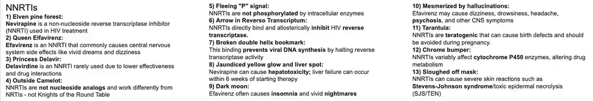
24. Protease Inhibitors
- Drugs ('-navir'): ritonavir (booster), lopinavir/ritonavir, atazanavir, darunavir, indinavir, saquinavir, nelfinavir, fosamprenavir.
- Mechanism: inhibit HIV aspartyl protease, which cleaves the gag-pol polyprotein into functional proteins, so virions are immature and non-infectious; no phosphorylation required.
- Use: HIV-1 combination ART (typically with 2 NRTIs); ritonavir or cobicistat given at low dose as a pharmacokinetic booster of other PIs.
- Adverse effects: hyperglycemia/insulin resistance, dyslipidemia, lipodystrophy ('protease paunch'), GI upset; indinavir - nephrolithiasis; atazanavir - indirect hyperbilirubinemia; darunavir - sulfa allergy; strong CYP3A4 inhibition.
- Buzzwords: 'navir tease a protease'; ritonavir = booster/CYP3A4 inhibitor; rifampin (inducer) lowers PI levels - use rifabutin; stay hydrated on indinavir.
- 1Guinevere: Protease inhibitors are named '-navir' (ritonavir, lopinavir, atazanavir, darunavir, indinavir, saquinavir, nelfinavir, fosamprenavir); they are a core class of antiretroviral drugs.⭐ 'Navir tease a protease.'
- 2Fleeing 'P' signal: Protease inhibitors are active directly, with no need for intracellular phosphorylation (unlike NRTIs); the same is true of NNRTIs and integrase inhibitors, so this is not unique to PIs.
- 3Sword in the stone: Protease inhibitors block the HIV-1 aspartyl protease that cleaves the gag-pol polyprotein into mature structural proteins and enzymes during virion maturation.
- 4Immature knight: When protease is inhibited, newly budded virions remain immature and non-infectious because the polyproteins are uncleaved.
- 5Paul's Smithy: The pol gene encodes the viral enzymes protease, reverse transcriptase and integrase (gag = capsid/core proteins; env = gp120/gp41); PIs target the protease product of pol.⭐ gag = group antigen, pol = polymerase enzymes, env = envelope.
- 6Elevated candy jar: Protease inhibitors can cause insulin resistance and hyperglycemia/diabetes mellitus.
- 7Elevated butter: Protease inhibitors can cause dyslipidemia (elevated cholesterol and triglycerides), contributing to cardiovascular risk.
- 8Central adiposity: Protease inhibitors cause lipodystrophy with central fat accumulation (abdominal obesity, 'buffalo hump') and peripheral wasting.
- 9Indigo princess: Indinavir is an HIV protease inhibitor ('indi-navir', Indigo); it must be taken on an empty stomach and is now rarely used.
- 10Stones in kidney fountain: Indinavir crystallizes in the urine and can cause nephrolithiasis (kidney stones), hematuria and flank pain; it can also cause asymptomatic indirect hyperbilirubinemia.⭐ Indinavir = stones; atazanavir = indirect hyperbilirubinemia.
- 11Drinking fountain water: Adequate hydration (at least 1.5-2 L/day) prevents indinavir crystal nephrolithiasis.
- 12Broken chrome bumper: Protease inhibitors inhibit the cytochrome P-450 system (mainly CYP3A4), raising levels of many drugs (statins, benzodiazepines, ergots, etc.).
- 13Right owl: Ritonavir is the most potent CYP3A4 inhibitor of the PIs, so it is given at low doses to 'boost' (raise the levels of) other protease inhibitors; cobicistat is a non-antiviral booster with the same action.⭐ Ritonavir = 'Rit-owl': potent CYP inhibitor/booster.
- 14Speeding rifle: Rifampin activates (induces) cytochrome P-450, lowering PI concentrations and risking treatment failure; rifabutin (a weaker inducer) is used instead in patients with HIV and TB.⭐ Rifampin induces; ritonavir inhibits.
Show the original legend picture
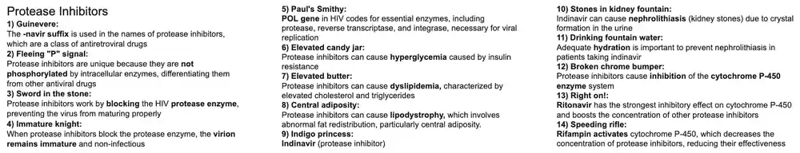
25. Maraviroc, Fusion Inhibitors, Integrase Inhibitors
- Drugs: maraviroc (CCR5 antagonist), enfuvirtide (T-20, fusion inhibitor), integrase strand transfer inhibitors (raltegravir, dolutegravir, elvitegravir, bictegravir, cabotegravir).
- Mechanism: maraviroc blocks host CCR5 co-receptor; enfuvirtide binds gp41 to block fusion; INSTIs ('-tegravir') block integrase so viral DNA cannot integrate into the host genome.
- Use: INSTIs are preferred first-line with 2 NRTIs; maraviroc and enfuvirtide are salvage agents for multidrug-resistant HIV (maraviroc only for CCR5-tropic virus, confirmed by tropism assay).
- Adverse effects: enfuvirtide - injection-site reactions, hypersensitivity; maraviroc - hepatotoxicity, CYP3A4 interactions; INSTIs - well tolerated, elevated CK/rhabdomyolysis, insomnia, headache, weight gain; chelation by Ca/Fe/Mg/Al.
- Buzzwords: 'gp120 = CD4 + CCR5/CXCR4'; 'gp41 = fusion'; 'pol = protease, RT, integrase'; 'gag = p24'; 'env = gp160 -> gp120/gp41'; '-tegravir'.
- 1Seized castle with T-shaped crosses: HIV infects cells expressing CD4: helper T cells, macrophages and dendritic cells.
- 2Invading ship: Budding virions leave one cell and infect the next, repeating the replication cycle.
- 3Gagged prisoners in the core of the ship: The gag gene encodes the group-specific core/capsid proteins (p24 capsid, p17 matrix, p7 nucleocapsid).
- 424-hour sundial: p24 (capsid protein) is encoded by gag and is a detectable antigen in early HIV infection (4th-generation tests).⭐ gag = p24, p17; env = gp120, gp41; pol = enzymes.
- 5Envoy coming ashore: The env gene encodes envelope glycoproteins (gp160 cleaved into gp120 and gp41) that mediate attachment and entry.
- 6120 battering ram: gp120 is the surface glycoprotein that binds CD4 and the co-receptor to gain entry into the cell.
- 7Helper squire and CCR5 banner: gp120 binds host CD4 first, which exposes binding to a chemokine co-receptor: CCR5 (R5, macrophage-tropic, early infection) or CXCR4 (X4, T-cell tropic, late). Individuals homozygous for CCR5-delta32 are resistant to infection.⭐ CCR5-delta32 = HIV resistance.
- 8Mare with CCR5 banner: Maraviroc is a CCR5 antagonist (entry inhibitor) that blocks gp120 co-receptor binding; it requires a tropism assay confirming CCR5-tropic virus, and adverse effects include hepatotoxicity and CYP3A4 interactions.
- 941 grappling hook: gp41 mediates fusion of the viral envelope with the host cell membrane after co-receptor binding (via its conformational change).
- 10Fusion hook deflector: Enfuvirtide (T-20) is a peptide fusion inhibitor that binds gp41 and prevents fusion; it is given subcutaneously twice daily with injection-site reactions and hypersensitivity as main adverse effects, and is used mostly for salvage therapy.
- 11Endoplasmic reef: Env-encoded proteins (gp160) are synthesized, glycosylated and folded in the rough endoplasmic reticulum and then cleaved to gp120/gp41 in the Golgi before moving to the cell surface.
- 12Reverso transcriptum spell: Reverse transcriptase (RT) is the viral RNA-dependent DNA polymerase encoded by pol; it makes DNA from the viral RNA genome.
- 13Doubling army: Reverse transcriptase converts single-stranded viral RNA into double-stranded proviral DNA (and its RNase H activity degrades the RNA template).
- 14King Arthur and Elf queen Elfavir: NRTIs (nucleoside analog chain terminators) and NNRTIs (allosteric inhibitors, e.g., efavirenz) both inhibit reverse transcriptase.
- 15Paul the blacksmith producing swords, spellbooks and keys: The pol gene encodes the viral enzymes protease (swords - PIs), reverse transcriptase (spellbooks - NRTIs/NNRTIs) and integrase (keys - INSTIs).
- 16Double-helix staircase behind keyhole: Integrase inserts (integrates) proviral DNA into the host cell genome, creating the provirus.
- 17Key deflector: Integrase strand transfer inhibitors (raltegravir, dolutegravir, elvitegravir, bictegravir) bind integrase and block insertion of viral DNA into the host genome; they are the preferred third drug in first-line ART and are well tolerated.⭐ '-tegravir' = integrase; chelated by polyvalent cations (antacids, iron, calcium).
- 18Crispy chicken with bite: Integrase inhibitors (notably raltegravir) can cause elevated creatine kinase and rhabdomyolysis/myopathy; other effects include insomnia, headache and weight gain, and dolutegravir raises serum creatinine by blocking tubular secretion without reducing GFR.
Show the original legend picture
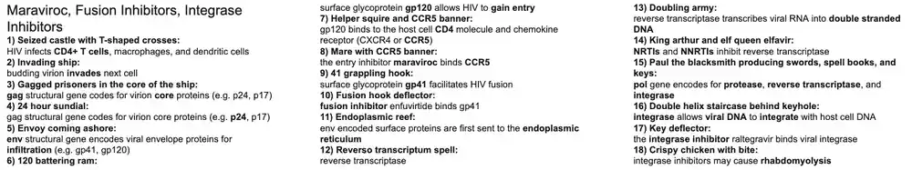
26. Metronidazole
- Drug: metronidazole (a nitroimidazole); also tinidazole. Oral, IV, vaginal and topical forms; excellent tissue and CNS penetration.
- Mechanism: prodrug reduced by anaerobic/microaerophilic organisms to free radicals that damage DNA (bactericidal); needs low redox potential, so aerobes are spared.
- Uses: anaerobes (Bacteroides fragilis, Clostridium, Fusobacterium, Prevotella), Giardia, Entamoeba, Trichomonas, Gardnerella (BV), H. pylori combos, C. difficile (alternative), brain abscess/intra-abdominal infection.
- Adverse effects/cautions: disulfiram-like reaction with alcohol, metallic taste, nausea, peripheral neuropathy, seizures/encephalopathy, dark urine; avoid alcohol during and 48-72 h after; caution in first trimester.
- Buzzwords: 'GET GAP on the Metro' (Giardia, Entamoeba, Trichomonas, Gardnerella, Anaerobes, Pylori); treats infections below the diaphragm; treat the sexual partner in trichomoniasis.
- 1Metro (the train): Metronidazole is a nitroimidazole antimicrobial active against anaerobic bacteria and protozoa; the 'Metro' pun in the name anchors the whole scene.⭐ Mnemonic: GET GAP on the Metro - Giardia, Entamoeba, Trichomonas, Gardnerella, Anaerobes (Bacteroides, Clostridium), Pylori.
- 2Mr. Fragilis stabbed in the abdomen: Metronidazole covers Bacteroides fragilis, the main anaerobe in polymicrobial intra-abdominal infections (abscess, peritonitis, diverticulitis, appendicitis), usually combined with an agent covering enteric gram-negatives. It is also used for brain abscess and anaerobic infections below the diaphragm.
- 3Broken helix: Metronidazole is a prodrug that is reduced by anaerobic organisms' ferredoxin/nitroreductase systems into free-radical metabolites that fragment bacterial and protozoal DNA, making it bactericidal. Aerobic cells cannot activate it, which gives selectivity.⭐ Needs low redox potential, so it has no activity against aerobes.
- 4Do not enter: Metronidazole is active against Entamoeba histolytica (amebiasis). It is used for invasive disease (colitis, liver abscess) and must be followed by a luminal agent such as paromomycin or iodoquinol to clear cysts.
- 5Colonel Giardia with the protozoan shield: Metronidazole (or tinidazole) treats Giardia lamblia infection (foul-smelling, greasy diarrhea after drinking contaminated water or camping).
- 6Mr. Trichomonas with the strawberry: Metronidazole treats Trichomonas vaginalis vaginitis/cervicitis: frothy green-yellow malodorous discharge, strawberry cervix (colpitis macularis), pear-shaped motile trophozoites on wet mount, raised vaginal pH.⭐ Trichomonas = flagellated protozoan; 'strawberry cervix'.
- 7Mrs. Trichomonas: Trichomoniasis is sexually transmitted, so the patient and the sexual partner(s) must both be treated (even if asymptomatic) to prevent reinfection.
- 8Ms. Gardner with the venus fly trap: Metronidazole treats bacterial vaginosis (Gardnerella vaginalis overgrowth): thin gray-white 'fishy' discharge, clue cells, positive whiff test with KOH, pH >4.5. Partner treatment is not required for BV.⭐ BV: clue cells + whiff test; Trichomonas: motile protozoa. Both are treated with metronidazole.
- 9Helicopter: Helicobacter pylori triple therapy is a PPI + clarithromycin + amoxicillin; in penicillin-allergic patients metronidazole replaces amoxicillin. Metronidazole is also part of bismuth quadruple therapy (PPI + bismuth + metronidazole + tetracycline).
- 10Mlle. Clostridium with the gas mask: Metronidazole has broad anaerobic coverage, including Bacteroides, Prevotella, Fusobacterium and Clostridium species (e.g., C. perfringens gas gangrene adjunct). It lacks activity against aerobes and has poor activity against Actinomyces and Propionibacterium.
- 11Chocolate fondue fountain: Metronidazole treats Clostridioides difficile (pseudomembranous colitis, brown/'chocolate' watery stool) but oral vancomycin or fidaxomicin are now first-line; metronidazole is an alternative for mild-moderate disease when those are unavailable, and IV metronidazole is added with oral vancomycin for fulminant disease.⭐ Stop the offending antibiotic (clindamycin, fluoroquinolones, cephalosporins).
- 12'NO DRINKING ON METRO': Alcohol with metronidazole causes a disulfiram-like reaction (flushing, headache, tachycardia, palpitations, nausea/vomiting) due to inhibition of aldehyde dehydrogenase with acetaldehyde accumulation. Other adverse effects: metallic taste, peripheral neuropathy, CNS toxicity/seizures, and dark urine.⭐ Disulfiram-like reaction drugs: metronidazole, certain cephalosporins (cefotetan), sulfonylureas, procarbazine.
Show the original legend picture
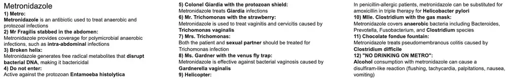